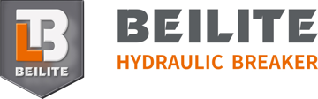
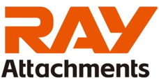

制造商
按类别和省份筛选所有制造商。

·静音式、顶部式、侧置式液压破碎锤
设有多地区官网并公布联系方式,参加南非、印尼展会(其新闻页称参加2025年bauma);CE/ISO、所在地及欧盟代表未得到确认。
- 网站
- www.beilite.com
- 电话
- +86 18357669906
- 电子邮件
- info@beilite.com
- Maps
- 📍 在谷歌地图查看工厂
 Hefei · 安徽
Hefei · 安徽
安徽合力股份有限公司
叉车（电动及内燃）、仓储设备
上海证券交易所上市（600761）的合肥叉车制造商，在德国设有自己的有限公司，并在黑森州设有研发中心。
- 网站
- helichina.net
- 欧盟公司
- Heli Forschungs- und Entwicklungszentrum Europe GmbH, Friedberg (Hessen), 2024 gegründet (laut Arbeitsagentur-Stellenangebot); frühere Heli-Europazentrale bei Calais, Frankreich (Teile/Service, 2015)
- Maps
- 📍 在谷歌地图查看工厂
砌体和石材台式切割机，包括GMS400（400毫米锯片、2.2千瓦、切割深度125毫米、110公斤）
据供应商资料为制造商，位于安徽合肥（新站区九顶山路88号），400毫米石材台式切割机GMS400挂牌价590-700美元，起订量1台。 资料称持有ISO 9001和CE；公司名称有多种写法（包括Ludwig Engineering Machinery Manufacturing Co., Ltd.、GE WILSON Holding Co., Ltd.），下单前须澄清法律主体。
- Maps
- 📍 在谷歌地图查看工厂
北京方石机器人有限公司 / 苏州方石科技有限公司
陶瓷及石材地砖铺贴机器人；喷涂-刮腻-打磨一体机器人JPD433D、DPD445E、DPD460E（作业高度3.3/4.5/6米）；激光找平、抹平及砂浆刮平机器人
唯一有喷涂/刮腻子机器人系列欧盟CE合规证明的供应商（CERTING Srl，2026年9月），另有铺砖机器人并参加2026年10月博洛尼亚SAIE展——但没有欧盟销售网络，也没有价格表。
- 网站
- www.fangshitech.com (EN: https://en.fangshitech.com)
- 电话
- (+86)15298850088 (Sales/WhatsApp); 13914098070 (Kooperationen)
- 电子邮件
- info@fangshitech.cn
- Maps
- 📍 在谷歌地图查看工厂
 Beijing · 北京
Beijing · 北京
模板系统(爬模、墙模、柱模)、脚手架及支撑系统
自2003年起在北京经营,据目录信息为中国模板和脚手架领域的先行者之一(类型为制造商兼贸易商,未见EN证书)。
- Maps
- 📍 在谷歌地图查看工厂
 Quanzhou · 福建
Quanzhou · 福建
福建群峰机械有限公司
砌块与制砖机械：空心砌块、铺路砖和路缘石成型机。
中国制造网资料显示为已核实工厂（泉州南安；2008-04-14成立；392名员工；ISO 9001:2015、ISO 45001:2018、ISO 14001；审核工厂；2005年起钻石会员）。 参展bauma CHINA 2026，SNIEC E7.811馆。
- Maps
- 📍 在谷歌地图查看工厂
工业安全帽(EN 397/EN 50365)、攀登和救援头盔、自行车、滑雪和滑板头盔、碳纤维制品
2008 年成立,据公司简介为专业头盔制造商,自有研发团队(30 多名工程师)和模具能力;店铺页面有工厂照片和 CE 证书(含 EN 12492),为已审核供应商。 地址:东莞道滘。
智能宠物用品(喂食器、饮水机、GPS追踪器、真空储粮罐)以及牵引绳、项圈和胸背带;自有品牌、OEM及自有品牌代工。
纳斯达克上市(DOGZ),2003年成立,总部在东莞;据新闻稿为Dogness品牌、OEM和自有品牌产品的研发制造商,客户包括Petco、PetSmart、Costco、沃尔玛和Target。 注意2026年10月21日的纳斯达克最低股价通知。
自动和手动皂液器、空气清新剂分配器、纸巾机、香薰机
Made-in-China资料：制造商兼贸易公司，2020年12月28日成立，员工44人，地址为东莞市清溪镇（Building 3, Xingye 2nd Street, Tuqiao）。 YK1808商品页：1,000毫升，液体/泡沫/喷雾，红外感应，4或8节AA电池，200件起8.15美元（以下为10.00美元）；商品页的质保说明相互矛盾（1年和3年）。
狗项圈、胸背带和牵引绳,包括带提手和反光的防拉扯胸背带套装;支持OEM/ODM。
Made-in-China资料:生产/贸易企业,2016年成立,员工14人,"Audited Supplier";规模较小,更适合小批量订单。
耳罩及配件（耳垫、头带）：被动式、电子式、蓝牙、射击运动；OEM/ODM，自有品牌 LP
店铺显示为 Manufacturer/Factory，通过 ISO 9001:2015（东莞长平镇）；前身为 Dongguan Long Prosper Electronic Products Co., Ltd.，2006 年成立；4 条生产线，年产值 250–500 万美元，研发人员 5–10 人，2017 年起出口，市场包括北美、东南亚、大洋洲和西欧；最近港口为深圳。
- 网站
- safetyearmuff.en.made-in-china.com
- 联系人
- Frank Wu (laut Storefront)
- Maps
- 📍 在谷歌地图查看工厂
直发器、卷发棒、BLDC 5合1多功能造型器（F8118）
2008年成立（Made-in-China公司页），员工204人，2011年起为钻石会员，经独立检验机构审核；型号F8118列出的认证有ETL、cETL、PSE、SAA、SASO、BS、CB、KC、CE（报价页文字，未见报告），MOQ 500件（页面FAQ写1,000件），价格需询价。
无线充电线圈、精密配件、无线充电器和磁吸充电宝（含 Y453，10000 mAh，15 W 磁吸，USB-C 20 W）
Made-in-China 公司资料：东莞石碣 Manufacturer/Factory 兼 Trading Company，2010 年成立，35 名员工，厂房 2000 平方米，4 名研发工程师，配有绕线机和变压器测试系统，2013 年起为金牌会员，TÜV Rheinland 审核编号 MIC-ASR242634，自有品牌；主要市场为北美和东南亚/中东；资料称持有 CE 证书（未核对）。
挂绳、带卷盘拉绳的硬塑料证件卡套（含 LB035-1）、胸牌卷盘、工艺品和促销礼品
Made-in-China 公司资料：东莞厚街 Manufacturer/Factory 兼 Trading Company，2016 年成立，39 名员工，厂房 950 平方米，TÜV Rheinland 审核编号 MIC-ASI262688，2026 年起为钻石会员（平台新会员），以图片展示 7 份证书（未核实）；主要市场为东亚和西亚。 资料中的地址为办公室（Room 202）。
织带及尼龙宠物用品:胸背带、牵引绳、项圈;可定制Logo。
Made-in-China资料:生产/贸易企业,2007年成立,员工69人,ISO 9001:2015,"Audited Supplier",出口经验超10年;织带产能每月800万码(企业自述)。
焊接面罩、自动变光滤镜、PAPR 焊接面罩、电焊手套及配件（头带）
自述：20 年焊接面罩和自动变光滤镜的研发制造经验，出口欧洲和北美；面罩有 CE／ANSI／Z94.3 声明；2023 年起为 Gold Member，已审核供应商（Made-in-China）。 手套为配件产品线，自产未证实。
- 网站
- wellppe.en.made-in-china.com
- 联系人
- Michelle (Sales Manager)
- Maps
- 📍 在谷歌地图查看工厂
EVA硬壳包、热压件和泡棉内衬,包括护膝插片(OEM)
在Made-in-China上登记为位于东莞寮步的Manufacturer/Factory(ISO 9001);自述:模具超过20,000套,护膝插片月产能100万副,客户包括Thule、HP、Ogio、Oakley(未经核实)。
 Dongguan · 广东
Dongguan · 广东
挂绳（印刷挂带）以及旅行和家居用品
东莞的挂绳制造商，据Tradewheel公司资料约90 %的产品出口到欧洲及其他市场。
乳胶、丁腈和 PVC 一次性手套，洁净室和工业手套，长腕丁腈手套（OEM）
Made-in-China：Manufacturer/Factory & Trading Company，2020-11-26 成立，35 名员工，东莞长安镇；2022 年起 Diamond Member，已审核供应商；产品页列出的证书：ISO 9001、ISO 13485、CE（自述）。
PC 摄像头、网络摄像头和摄像模组，OEM/ODM
Made-in-China.com：生产兼贸易公司，2014 年成立，东莞塘厦镇，210 名员工，厂房 9498 平方米，18 名研发工程师，贸易信息经 BV 核验，认证为 CE 和 CCC，主要市场包括欧洲和北美，2022 年起为金牌会员，2019 年开始出口。
文具及卡牌配件：PP泡沫文件夹、卡套、硬质卡砖（Toploader）、卡盒及4格/9格卡册（PU和PP）
Made-in-China：已审核供应商；资料地址在东莞南城街道；主营产品为PP泡沫文件夹，另有卡牌配件，店铺分类含PU 9格和PP 9格卡册；店铺文字未注明企业类型。 东莞是可选南线的行程站点（12月8日周二）。
智能宠物饮水机和喂食器;支持OEM/ODM。
Global Sources资料:制造商,2021年成立,员工40–59人,工厂超3000平方米、3条生产线、月产约6万台(企业自述);出口市场东欧。 资料中未列价格和型号。
氯丁橡胶制品：潜水衣、涉水裤、救生衣/浮力背心、手套、靴子、潜水装备、防晒冲浪衣
东莞东坑的制造商（Manufacturer/Factory）；生产面积 7,000 平方米以上、熟练工人 80 人以上、ISO 9001、2009 年起出口，市场为美国/欧洲/澳大利亚/日本；上一年救生衣/浮力背心产量 80,000 套（店铺页）。
55–110英寸交互式平板（教育和会议）、交互式白板、智能黑板、广告机、OPS迷你电脑
ISO 9001:2015、ISO 45001:2018、ISO 14001；BV审核报告MIC-ASR252695；公司自述：2022年起厂房面积30,000平方米，员工逾100人，设有光学贴合产线，持有CE/FCC/EMC/RoHS报告；出口额3,095万元人民币，22名外贸人员，6名研发工程师，市场包括欧洲，2022年起为钻石会员，挂牌页产能每月5,000台。 资料所列地址在长安镇，挂牌页所述生产基地在黄江镇（东莞）。
- 网站
- ikinor.en.made-in-china.com
- 联系人
- Miss Sabrina (Sales, per Made-in-China profile)
- Maps
- 📍 在谷歌地图查看工厂
移动空调窗口密封套件和窗户排风套件、空调配件、风扇电机。
Global Sources将该公司列为“Exporter, Manufacturer, Trading Company”,员工800-849人(产品页信息,工厂未经独立核实);产品页FOB港口:中国大陆;出口市场含西欧;交期25-35天,可定制尺寸/ODM。 所在地东莞(广东)由公司名称推断——产品页未给出工厂地址。
- Maps
- 📍 在谷歌地图查看工厂
角磨机集尘罩
挂牌未注明企业类型。
交互式白板和交互式平板、LCD数字标牌、触控一体机、拼接屏
Made-in-China资料：类型为Manufacturer/Factory & Trading Company，131名员工，BV审核报告MIC-ASR2321421；公司自述：2010年创立，生产基地10,000平方米，员工逾150人，年产能80,000台，出口80多个国家（含德国），面板合作伙伴为三星/友达/LG/奇美/夏普/京东方，持有CE/CB/RoHS/FCC/Energy Star/Google EDLA/ISO 9001。 无上市证据，故为B级。
- 网站
- touchboard.en.made-in-china.com
- 联系人
- Mr. Garydu (Sales Manager per Made-in-China profile)
- Maps
- 📍 在谷歌地图查看工厂
数字标牌、AI翻译机
据listing为制造商/贸易商,万江工业园。
EVA 收纳包:笔袋、耳机、头戴耳机、充电宝、工具、相机、电子产品和平板收纳包;OEM/ODM
Made-in-China 档案:Manufacturer/Factory & Trading Company,2015 年成立,39 名员工(档案所列),OEM/ODM,主营 EVA 收纳包(含工具包)。 列表中半圆形 EVA 硬壳包 500 件起订 2.09–2.35 美元,可反映价格水平。
EVA 收纳包(工具、眼镜、DVD/CD 包)、EVA 压制件和 3D 汽车脚垫;列表中亦有呼吸器用 EVA 收纳包(型号 EVA CASE-1,可定制)
Made-in-China 档案:登记类型为贸易公司,但自述 2009 年起为 EVA 制造商,工厂地址在东莞厚街镇;列有涉及呼吸器的 EVA 收纳包,500 件起订 2.60 美元(列表所列证书:SGS,未核验)。 下单前须确认是否为实际工厂。
纸盒、喜糖盒
按Made-in-China列表为生产商/工厂;未核查其他证据。
热升华空白件（TPU/PC 手机壳、杯子、挂件）、热转印膜、手机壳印刷机；可做 OEM/ODM
据公司简介成立于 2012 年，在东莞和九江有两个生产基地，总面积超过 33000 平方米，约 200 名员工，自有模具制造和注塑，ISO 9001:2015，SGS 验厂报告 QIP-ASI262142，出口经验超过 10 年；起订量 1 件，交期 7 天起。 店铺未显示企业类型（公司自述）。
卡牌及桌游配件：卡套、卡盒、收藏卡册、游戏垫和OPP袋
Made-in-China：生产型+贸易型企业，2010年成立，员工187人，厂区19,716平方米，已审核供应商并有SGS审核报告；产品集中于卡牌配件。 地点东莞（石排），未注明义乌办事处；东莞是可选南线的行程站点（12月8日周二）。
CNC精密零件与金属小件；自有磁力金属指尖滑块产品页（扑克滑块EC-0010、推牌），激光雕刻，OEM/ODM
Made-in-China.com：企业类型为生产厂家，钻石会员，已通过审核的供应商；工厂地址为东莞寮步镇药勒中兴二巷1号（可选行程站，12月8日周二；产品页港口为深圳）；出口占比超90%；CNC加工并配备三坐标、卡尺、千分尺等检测设备。 提示：MIC出口记录为2026-07（账号较新，历史较短）；主营为CNC零件，展厅主要展示铁罐、抹茶筛配件和钛合金EDC件及自动售货机、钣金——需在审核中确认滑块为自有生产。
鞋垫（凝胶、PU泡棉、矫形、运动、保暖、儿童）及足部护理产品
自称为东莞鞋垫制造商；店铺显示地址在厚街，提供OEM/ODM、样品，出口多个地区。 B级：企业类型和证书未核实。
东莞汇乐技术股份有限公司
工业吸尘器（HEPA 系列、干湿两用、ATEX 防爆）、除尘器、中央吸尘系统
成立于 2007 年，拥有两座总面积逾 10 万平方米的工厂，通过 ISO 9001/14001、CE、TÜV-ATEX、IECEx 和 UL 认证，并自 2019 年起在德国设有独立公司 Villo Tech GmbH；但官网未标明符合 EN 60335-2-69 的 H 级粉尘等级，须另行索取检测报告。
- 网站
- villotech.com (EN) / https://www.villo.cn (CN)
- 电话
- +86 13266019569 (villotech.com, China R&D Center) / 0769-8939 6699 (villo.cn)
- 电子邮件
- info@villotech.com / villo@villo.cn
- 欧盟公司
- Villo Tech GmbH, Oberasbacher Str. 20, 90522 Oberasbach, Deutschland; Tel. +49-911 47734160; info@villotech.de
- Maps
- 📍 在谷歌地图查看工厂
商用迷你电脑（品牌Minitree，酷睿i3-1315U/i5-1335U/i7-1360P，双网口）、嵌入式及工业电脑
Made-in-China资料：类型为Manufacturer/Factory，2020年6月12日成立，21名员工，2026年起为钻石会员，“Audited Supplier”；公司自述拥有自有生产基地和SMT及组装线。 资料列出的主要市场包括西欧。
东莞旭利织带
尼龙织带、狗绳
Made-in-China列表（制造/贸易）
碳纤维运动用品：冰球杆、板式网球拍/网球拍/沙滩网球拍
资料：专注碳纤维运动用品，位于东莞清溪镇；Audited Supplier。 列有碳纤维板式网球拍（12K，35美元；区间20–55美元）。
手机钢化玻璃膜和手机壳，OEM/ODM
Made-in-China.com：生产兼贸易公司，2014 年成立，东莞凤岗镇，44 名员工，厂房 3500 平方米，6 条生产线，ISO 9001:2015 和 ISO 14001，信息经 SGS 核验；资料中的主要市场为中东，2026 年才成为钻石会员，没有欧盟出口证据。
厨房小家电：食品烘干机、冰淇淋机、蒸锅、真空封口机（型号SV-61SP，130瓦）。
Made-in-China店铺带“参观工厂”，经独立第三方检验机构审核，2025年起为金牌会员，地址在东莞；页面未显示企业类型。 真空封口机SV-61SP：21.50–21.90美元，起订量1,000件。
钢制、玻纤、塑料和铝制鞋头，防刺穿中底，钢制中底板，安全鞋套，安全鞋
工厂地址位于东莞（店铺类型：生产厂家兼贸易公司），ISO 9001，出口占比71–90%，自称2011年建厂、拥有6条生产线。 B级：产品证书尚未核实。
地砖铺贴机器人P900（最高18 m²/h，640 kg，180 Ah电池）、智能放线机器人L3000、砂浆找平机器人
目前找到的唯一有欧洲项目记录（柏林、勒芒、萨拉曼卡）并入围2026年BATIMAT奖的铺砖机器人厂商——但属于初创企业（2023年成立），没有CE声明。
- 网站
- www.partnerrobotics.com
- 电话
- WhatsApp +86 13367726876
- 电子邮件
- info@partnerrobotics.com; william@partnerrobotics.com
- 联系人
- William
- Maps
- 📍 在谷歌地图查看工厂
工作服和阻燃服装:警示连体服和夹克、阻燃工作服、焊工和电弧防护服
自述:2005 年成立,51–100 名员工,“professional manufacturer and exporter”;地址:东莞长安珠宝文化产业园 6-33#;主要市场含西欧。 档案未显示企业类型,工厂和证书无佐证。
激光测距仪（SW-M50/M70/M100、SW-T100、H-D100系列），自有品牌及OEM/ODM
2010年创立于广东东莞虎门，2023年8月前名为东莞市Sndway电子有限公司；据展会资料（IWA、香港贸发局）年产量约300万台，出口30多个国家和地区，并承接OEM/ODM业务。 与中海达、南方测绘同属广东省；官网未经核实，因此未采用联系方式。
- Maps
- 📍 在谷歌地图查看工厂
机械键盘键帽（PBT、定制）、键帽解压钥匙扣、硅胶模具和硅胶制品
店铺页：企业类型为生产厂家，ISO 9001，提供OEM/ODM，工厂地址为东莞横沥（尽管公司名含义乌）；商品：可旋转发光键帽解压钥匙扣1.90-3.00美元（起订量5套），键盘解压钥匙扣0.50-0.90美元。 档案显示出口起始日仅为2026年8月19日，且未提及审核：下单前需核实地点和工厂。
真空封口机、真空袋/卷/保鲜盒、烟熏器、厨余处理器；OEM、ODM及自有品牌YUMYTH。
在Made-in-China上标注为东莞“制造商/工厂”，已审核供应商，出口占比超过90%（2017年起出口），管理体系ISO 9001、ISO 14001、BSCI，产品认证ETL、GS、CE、CB、EMC、LVD、ERP、LFGB、RoHS、REACH（均为供应商自述，尚未看到报告）；研发团队5–10人。
箭牌家居集团股份有限公司
卫生陶瓷（含智能马桶）、龙头及五金、浴室柜、浴缸、淋浴房、瓷砖；品牌：ARROW（箭牌）、FAENZA（法恩莎）、ANNWA（安华）
深圳证券交易所上市公司（001322），约15,000名员工，提供包括龙头在内的全套卫浴产品，但在欧洲/德国的业务布局未得到证实。
家具脚轮、工业及刹车脚轮（PU、尼龙、TPR、铸铁）、办公椅脚轮
硬地板脚轮的报价来源（型号 SY-OC，11 毫米杆，PU 胎面，据报价页通过 ISO 9001）。 档案：生产加贸易型公司，2005 年成立，67 名员工，Made-in-China 钻石会员自 2010 年，经独立机构审核，出口至美国、英国、日本等；提供 40/50/80 公斤承重和刹车款。
Chafing dishes, stainless cookware
Listing on Made-in-China; address is a trading center, factory to verify
铝合金挤压型材、瓷砖收边条及瓷砖护角条
据b2brazil公司页面,为佛山(广东)的铝合金挤压型材制造商,拥有12年以上经验,自称是瓷砖收边条的领先生产商(企业自称,未经核实);页面未列价格。
- Maps
- 📍 在谷歌地图查看工厂
 Foshan · 广东
Foshan · 广东
美甲打磨机、UV/LED 美甲灯、美甲吸尘器、打磨头、光疗甲油
2012 年成立(广东佛山);据店铺介绍,厂房 12,000–15,000 平方米(数据不一),员工逾 200 人,专利 100+(自述),CTI 审核编号 QIP-ASI261510;厂商声称证书含 CE、FCC、RoHS、UKCA、REACH、KC、EMC、ETL、3C、SGS、ISO;市场含北美、东欧、西欧。 FAQ 称工厂在江门附近,公司介绍称佛山:需核实地点。
工业、家具和推车脚轮（PU、尼龙、橡胶），托盘车轮（铁芯PU，80 × 50至80 × 100 mm及180/200 × 50 mm，ET4系列）
自称自1988年起生产脚轮，通过ISO 9001和ISO 14001，年产能1000万只脚轮，产品超过21,000种，自动化生产线，2014年起为Made-in-China钻石会员；列表称托盘车轮产能为100万件／月。 无上市证据，故为B级。
瓷砖找平系统（平台商品“Tile Leveling System”）
Made-in-China 公司页面（2026-11-02 访问）：“Manufacturer/Factory & Trading Company”，57 名员工，地址 8-1 Xiabairuyi Road, Luocun Village, Shishan Town, Nanhai District, Foshan, Guangdong（广东佛山南海区狮山镇），主营金属瓷砖收边条和瓷砖找平系统，企业自称提供 OEM/ODM 和样品。
三聚氰胺板办公家具：会议桌（型号 ZH-301）、办公桌、办公工位
会议桌的备选：型号 ZH-301，2,400/3,200 × 1,200 × 750 mm，88–138 美元，起订量 5 套，质保 3 年，列有 ISO 9001/SGS。 档案：“生产兼贸易企业”，厂房面积 16,036 平方米，注册资本 1,100 万元人民币，2005 年起出口，SGS 审核。
瓷砖找平系统（拉片、楔子、钳子），OEM
Made-in-China 公司页面（2026-11-02 访问）：“Manufacturer/Factory & Trading Company”，56 名员工，地址 No. 1, Lane 1, Mashe Houjie Industrial Zone, Lishui Town, Nanhai District, Foshan, Guangdong（广东佛山南海区里水镇），主营瓷砖收边条和瓷砖找平系统，企业自称提供 OEM/ODM 和样品；商品页列出 RoHS、ISO、CE、SGS 证书（企业自称，未查看）。 入驻平台自 2018 年。
Hotel porcelain, restaurant supplies
Manufacturer/Trading, Made-in-China listing
仿真花、南瓜装饰
按Made-in-China列表为生产商/工厂;未核查其他证据。
美容仪、声波洁面仪
Made-in-China公司页：制造商/工厂及贸易公司，2020年成立，员工15人，主营美容仪；洁面仪ABS/硅胶，IPX6，充电3小时，50-199件12.00美元，200件起11.70美元。 规模较小：需验厂。
手推车、平板推车和带工业脚轮的网笼车（金属与PP材质）
Made-in-China企业类型为Manufacturer/Factory & Trading Company，厂房面积2,968平方米，页面标称产能10万件/年；固定扶手平板车500 kg（760 × 1160 mm，金属与PP，5英寸PU脚轮，可选刹车）150美元，1件起订。 金牌会员仅自2026年起，故为B级并需核实。
吊灯、玻璃吊灯及壁灯，部分带智能调光控制
Made-in-China店铺（yiwulighting）：工厂兼贸易公司，地址佛山市顺德区大良街道（在考察路线佛山范围内）；GB9086款带智能控制，厂家声称有CE/RoHS/3C报告；B级。
办公椅（网布）、办公家具、办公桌、沙发
网布办公椅（36-56 美元，起订 20 件）的报价来源；位于佛山顺德的制造商（2013 年成立，made-in-china.com 审核供应商），属广东座椅集群，档案中未列出具体证书。
- Maps
- 📍 在谷歌地图查看工厂
 Foshan · 广东
Foshan · 广东
广东博智林机器人有限公司
地面、墙面及景观铺砖机器人；室内、地下车库（2.4/4.5米）及外墙喷涂机器人；腻子、滚涂、打磨、混凝土地面及砌块搬运机器人（目录共30款机型）
中国最大的建筑机器人制造商（目录30款机型，截至2022年9月累计交付逾1,600台），隶属上市公司碧桂园控股——但没有欧盟办事处、没有CE声明，当前目录中也已不再有砌砖机器人。
- 网站
- www.bzlrobot.com
- 电话
- 86-757-26652007; Hotline 400-988-2007
- 电子邮件
- bzlbranding@countrygarden.com.cn
- Maps
- 📍 在谷歌地图查看工厂
广东东鹏控股股份有限公司
瓷砖与岩板、卫浴产品及整装卫浴；品牌包括艺耐卫浴（座便器/洗手盆的具体品类未核实）
与箭牌同处佛山产业集群：据官网为深圳证券交易所上市公司（003012），经营瓷砖及卫浴产品线；佛山这一城市官网未注明，对欧出口、CE证明及直接联系方式（仅有通用客服热线）均未证实。
三聚氰胺板办公家具：会议桌（型号 KT002）、办公桌、办公工位；OEM/ODM
会议桌的价格来源：Made-in-China 档案“生产兼贸易企业”，2020 年成立，员工 118 人，厂房面积 30,000 平方米，档案列有 SGS 审核，出口约三年。 KT002（10 人，3.2–4.8 m）起订量 1 件，质保 5 年。
手机充电器、车载充电器、数据线、插线板、充电宝、耳机（含 TWS LDNIO-T01）、智能手表、USB 集线器；可做带 Logo 的 OEM/ODM
在 Made-in-China 上登记为生产厂家及贸易公司，成立于 2010 年（公司简介称 LDNIO 品牌始于 2002 年），员工 455 人，2019 年起为钻石会员，BV 验厂报告 MIC-ASI251457；据其自述通过 CE/FCC/RoHS/PSE，并在德国、美国、英国等地有经销商。
- 网站
- gdldnio.en.made-in-china.com
- 联系人
- Miss Sherry (Sales Manager laut Made-in-China-Seite)
- Maps
- 📍 在谷歌地图查看工厂
Commercial kitchen equipment
Manufacturer/Trading, factory Shunde (Made-in-China listing)
- Maps
- 📍 在谷歌地图查看工厂

办公椅、实验室椅、培训椅及办公椅配件（脚轮、气杆、底盘机构、五星脚）
硬地板脚轮的备选厂家：型号 CT50-61G（直径 50 毫米，尼龙/PU，据报价页通过 BIFMA 和 SGS）MOQ 500 件时每轮 US$ 0.23–0.241（首单可不限 MOQ，据报价页质保 3 年）。 档案：生产加贸易型公司，2010 年成立，73 名员工，钻石会员自 2018 年，Audited Supplier。
 Foshan · 广东
Foshan · 广东
美的集团股份有限公司
热泵
已在AE Global Traders供应商清单(2026年10月)中核实的A级供应商,在德国埃施伯恩设有自己的德国公司。
- 网站
- www.midea-group.com
- 电话
- +49 6196 9020-0
- 电子邮件
- info-meg@midea.com
- 欧盟公司
- Midea Europe GmbH, Ludwig-Erhard-Str. 14, Eschborn
- Maps
- 📍 在谷歌地图查看工厂
酿造酱油（品牌 Sauce Grandmaster、Jade Bridge）、蚝油、甜辣酱、醋、芝麻油、有机和无麸质酱料
Made-in-China：“生产厂家兼贸易公司”，2007 年成立，SGS 审核（QIP-ASI2211400），金牌会员自 2022 年。 据公司简介，酱油酿造基地位于佛山高明合城富湾工业区；认证 ISO 9001、HACCP、BRC、FDA、BSCI、清真、Kosher；出口包括欧洲。
 Guangzhou · 广东
Guangzhou · 广东
混合及离网逆变器、家用储能电池(LPBA系列,含10 kWh / 200 Ah、48 V)、工商业储能柜
有自己的网站和德语欧洲站,提供LPBA系列家用储能电池(型号LPBA48200,10 kWh),并有德国经销商促销的市场价格。 网站未列出法定公司名称、认证和德国分支机构(仅有广州白云区地址和邮箱europe@felicitysolar.com)。
- 网站
- eu.felicitysolar.com/de
- 电子邮件
- europe@felicitysolar.com
- Maps
- 📍 在谷歌地图查看工厂
急救箱和急救包、伤口护理用品、防水石膏保护套
店铺资料：制造商兼贸易商，2000年成立（自述自1996年起出口），员工40人，在广州有约5,000平方米带洁净室的工厂；自称拥有ISO 13485、ISO 14001、MDSAP、BSCI，未核实
充电宝（含带支架的磁吸 10000 mAh 型号 RC-WP037）、便携储能电源、U 盘、存储卡、空白 CD/DVD、智能眼镜
Made-in-China 公司资料：2003 年成立，2009 年起为钻石会员，TÜV Rheinland 审核编号 MIC-ASR241250，出口 17 年，5 名外贸人员；地址为广州的办公室，企业类型未注明。 商品页自述：15 条生产线、月产 300 万件、30 名研发人员（资料中为 2 名研发工程师）、Logo 100 件起、1 年质保、CE、TÜV、RoHS（未核实）。
一体机、笔记本电脑、显示器（27英寸IPS FHD/2K，75 Hz）、智能电视
Made-in-China资料：2014年9月29日成立，62名员工，占地4,723平方米，CE/CCC/RoHS，3名研发工程师，类型为Manufacturer/Factory & Trading Company；资料列出的主要市场为南美、东南亚/中东、非洲（未列欧洲）。 27英寸2K/75 Hz IPS显示器挂牌价约38–69美元。
广东Superb国际科技有限公司
广东Superb国际科技有限公司
在Made-in-China列示（工厂/贸易商）。
呼吸防护、劳保
工厂/贸易混合；证书待核实。
垃圾桶、电子秤（厨房秤、珠宝秤、带USB的竹制厨房秤）、卫浴套装。
Made-in-China店铺带“参观工厂”和360度虚拟参观，已审核供应商；竹制厨房秤SKS-20322U（USB充电，5公斤）标注CE，1,000件起10.49美元。 页面未显示企业类型，办公地址在广州天河。
广州Altruism科技有限公司
广州Altruism科技有限公司
在Made-in-China列示（工厂/贸易商）。
蓝牙耳机和手机配件（如 TWS 耳机 A619），可做 OEM
在 Made-in-China 上登记为生产厂家及贸易公司，成立于 2015 年，员工 60 人，2022 年起为钻石会员，经第三方审核的供应商，具备进出口权，有两个自有品牌；A619 20 件起 6.25–6.94 美元。
交互式白板、触控一体机、户外立柱/自助终端及LCD数字标牌（32–100英寸）
Made-in-China资料：类型为Manufacturer/Factory & Trading Company，2012年8月30日成立，59名员工，占地1,720平方米；挂牌有55/65英寸标牌（如2000尼特橱窗屏718美元）。 无上市证据，故为B级。
护肤化妆品(睫毛精华、面霜)及手消毒凝胶(10毫升至1公斤)
生产工厂兼贸易(Made-in-China),成立于2009年,员工74人,2012年起为金牌会员;办公地址在天河区,生产地点需访厂时确认。
通风和喷漆房用空气过滤器：顶棚过滤器、滤材、袋式、V 型、纸框折叠式、HEPA、活性炭
在 Made-in-China 上登记为制造商（Audited Supplier，2022 年起 Gold 会员，OEM/ODM，列表称通过 ISO 9001/14001）。 G4 纸框折叠滤芯（型号 Lgc7725）20 件起订，2.50–2.90 美元。
通风和喷漆房用过滤器：HEPA/深褶过滤器、初效滤网、活性炭、滤材、漆雾毡
在Made-in-China上登记为制造商兼贸易商（2007年成立，104名员工，厂房16,090平方米，ISO 9001:2015/45001:2018/14001，Audited Supplier，2011年起钻石会员，有CTI审核报告）。 列表'ASHRAE Separator Box Filter 610x610x292'（H13/H14），1只起35美元，样品50美元，年产能50,000只。
Waffle makers, griddles, fryers
Manufacturer/Trading, Made-in-China listing
化妆品OEM/贴牌:身体乳、面霜、精华、护手霜、面膜
店铺显示“制造商/工厂及贸易公司”,成立于2020年10月15日,员工42人,地址:广州市从化区创业路29栋7号(考察路线:广州);260多个OEM商品,含护手霜(贴牌,100 mL)。 证书栏为“Others”,GMP/ISO 22716 未见证明,需索取。
专业 LED 环形灯（如 18 英寸 FT-45-18、21 英寸 60 W）带三脚架、相机三脚架、美容灯（睫毛灯）
在 Made-in-China 上登记为生产厂家及贸易公司，成立于 2017 年，员工 28 人；较大的影棚环形灯价格 32–80 美元，因此是 10 英寸款之外偏高端的备选。
护肤化妆品:护手霜、身体乳、面部护理、防晒(贴牌/OEM)
生产工厂兼贸易(Made-in-China),成立于2017年,员工50人,地址广州花都区;商品页列出MSDS、GMP、FDA、CE(未核实)。
 Guangzhou · 广东
Guangzhou · 广东
广州浩恩奉仕食品有限公司
奶茶和饮品原料：粉圆（木薯珍珠）、爆爆蛋、果汁、果酱、糖浆、粉类、茶；OEM/ODM
据参展商简介（HRC 2027）和公司网站自述：1998 年成立；四个生产基地共 5.5 万平方米（公司网站：工业园 5 万平方米，另有广州粉圆加工基地），年产能 7 万吨；向约 70% 的中国大型茶饮连锁供货，是广州此类原料最大的制造商；高新技术企业（自 2019 年）、20 项专利、FSSC 22000、ISO 22000、HACCP、FDA、清真，具备出口欧美的食品企业资质。 地址：广州市从化区温泉镇石海工业大道 23 号，邮编 510978；网站热线 400-8931885。
- 网站
- www.hefsfood.com
- 电话
- 400-8931885
- Maps
- 📍 在谷歌地图查看工厂
锂电池组和带 Type-C 充电口的圆柱电池（18650、AA、AAA、D、9 V），商品页容量最高 2600 mAh
Made-in-China 公司资料：Manufacturer/Factory 兼 Trading Company，2017 年成立，24 名员工，ISO 9001:2015，2024 年起为钻石会员，标注为审核供应商；自述：CE、RoHS、CCC、UN 38.3、MSDS。 商品页的起订量较高（5000 至 100000 件），未列 3600 mAh 的 USB-C 电芯。
擦窗用橡胶刮水器、涂水器和铝制伸缩杆
伸缩杆起订量 200 件；据 FAQ，一个 20 GP 集装箱内可混装多个品种。
- Maps
- 📍 在谷歌地图查看工厂
制服和职业装、运动及保暖内衣套装(OEM/ODM)
在Made-in-China上登记为广州的Manufacturer/Factory及贸易公司;自述:超过10年,员工超过200人,专注制服。 listing sd02(保暖套装,4.21–7.52美元,100件起阶梯价)纤维信息矛盾(聚酯/氨纶与100%棉);2025年起入驻。
充电式和市电台灯、餐厅与酒店灯具、装饰LED灯（OEM/ODM）
Made-in-China：Manufacturer/Factory & Trading Company，主营台灯，2018年12月12日成立；自述：拥有自己的模具和车间，前身为2010年起的模具厂，提供带Logo的OEM/ODM；据资料地址为广州秀全街爱民路（工厂未经独立核实）。
饮品和甜品配料（植脂末、搅打奶油、乳化剂、增稠剂）以及速煮木薯珍珠
贸易商/配料供应商，金牌会员自 2016 年，经独立机构审核；列表“Black Boba Pearls”（型号 Pearls-1）：MOQ 1,000 袋时每袋 1.50 美元，每箱 20 袋，冷冻储存，清真/HACCP/ISO 22000；未标袋重。 生产地未写明（广州办公地址）。
战术服装和包袋；另列有羊毛内衬钢头冬季安全靴（商品页）
Made-in-China简介：“Manufacturer/Factory & Trading Company”，12名员工，列有ISO 9001/14001/45001，办公地址在番禺。 是专注战术服装的小公司——是否自产冬靴未证实；未见证书，靴子未标注 EN ISO 20345。
工业触控与边缘AI设备
工厂地址未核实,listing未注明经营类型。
Befestigungs- und Gerüstteile / fasteners and scaffold parts
Made-in-China列为制造商/工厂；其他证明待补充。
- Maps
- 📍 在谷歌地图查看工厂
清洁湿巾(工业、手部)、纸卷、婴儿湿巾和纸尿裤
生产工厂(Made-in-China),通过ISO 9001和ISO 14064,地址广州大石街;港口广州/深圳,商品页注明交期15–25天。
Active PA speakers
Made-in-China列表为制造商/贸易公司。
书籍、纸质拼图、桌游和卡牌、记事本、彩印及包装印刷(OEM/ODM)
成立于 2008 年;据公司简介拥有 1 万平方米生产面积、500 名员工、日产能 5 万件;在 Made-in-China 上为已审核供应商(营业执照已验证),提供验厂参观。 列表提及 ISO 9001、Walmart、WCA、MSI、BVQ1 和 BSCI。
护肤、护发、防晒、护手霜和身体护理(贴牌/OEM)
生产工厂兼贸易(Made-in-China),成立于2015年,员工141人,地址广州嘉禾街双和工业区;平台评分5.0(68条评价)。
纸杯、纸碗、食品容器、纸盖、CPLA 盖、杯托、木质餐具
Made-in-China 档案：2025 年起为钻石会员，已审核供应商并有 SGS 报告，自称自 2016 年起为纸质包装制造商和方案提供商；店铺列出 ISO 14001、ISO 9001、FSC 和 BRC（自述，未见证书）。 档案未显示企业类型，须通过审核确认工厂身份。
iPhone、Samsung 和 iPad 钢化玻璃膜、镜头保护膜、手机壳；OEM/ODM
Made-in-China.com：2025 年起为金牌会员，已审核供应商，页面标题为 'Mobile Accessory Manufacturer'；资料中未标明企业类型。 公司展示了自有生产工序（钢化、切割、CNC、镀膜），并参加了 Global Sources 手机电子展（2025）；主要市场包括西欧。
Vegetable and meat cutting machines
Manufacturer/Trading, Made-in-China listing
- Maps
- 📍 在谷歌地图查看工厂
多口袋背带工作裤和防护连体服（型号 W553）
Made-in-China 搜索结果：'Bib Pants Workwear with Pockets Multi-Function Protection Coverall'（W553），8.5–12 美元，起订量 100 件，是找到的背带工作裤供应商中起订量最低的。 公司信息、是否为工厂及联系方式均未核实。
- Maps
- 📍 在谷歌地图查看工厂
口罩、一次性防护服、面罩、安全帽及安全帽备件(内衬、吸汗带)、安全鞋
店铺页面标注为'Manufacturer/Factory, Trading Company';管理体系 ISO 9001、ISO 14001、OHSAS 18001。 地址为广州天河大岭山,推测为公司总部——考察时需确认生产地点。
充气帐篷和充气空间系统（喷漆房、喷砂房、应急/救援帐篷、露营帐篷）；店铺页面注明可 OEM/ODM；早前检索还发现一款便携式充气除污淋浴
据店铺页面介绍为充气帐篷制造商，提供 OEM/ODM 服务并接受参观工厂；早前检索发现其上架一款便携式充气除污淋浴（约 590–990 美元）。 未找到符合 TRGS 519 的多舱人员或物料气闸，因此仅列为 B 级候选，需询价定制。
- 网站
- yolloy.en.made-in-china.com
- 联系人
- Ms. Sunny Yang (Manager, laut Shop-Seite)
- Maps
- 📍 在谷歌地图查看工厂
广州宇辰服饰有限公司
涤棉工作服
中国制造网列示的制造商；下单前需审核。
理发器、胡须修剪器、身体/私密修剪器、剃须刀、鼻毛修剪器(品牌 Lilipro)
2012 年成立,位于广州白云区江高镇(广东),员工 77 人,厂房面积 3,266 平方米,出口 13 年,Made-in-China 审核并附 TÜV Rheinland 报告编号,自述通过 BSCI 认证;自有品牌 Lilipro 销往亚洲、非洲、欧洲和美洲。 制造商/工厂兼贸易公司。
食品添加剂和配料（柠檬酸、维生素 C、黄原胶、甜味剂等）以及奶茶用干木薯珍珠（OEM）
贸易商/配料供应商，未证明自行生产珍珠：列表提到广州“稳定的工厂货源”、24 个月保质期、OEM/ODM 和 20 公斤箱装。 价格参考每公斤 1.99–2.99 美元。
运动服、工作服和林业防护服（含EN 381防切割裤Z-27071）
Made-in-China审核标识（营业执照已核实），厂房面积1,080平方米，7家供应链合作伙伴；广州工厂位置需在拜访时确认（办公地址为天河）
Chafing dishes, dishwashers
Manufacturer/Trading, factory Shilou (Made-in-China listing)
 Guangzhou · 广东
Guangzhou · 广东
广州中海达卫星导航技术股份有限公司
GNSS-RTK系统、全站仪、HT-32自动安平水准仪、SLAM/激光雷达扫描仪、GIS手持终端
自1999年起活跃于市场，在中国上市（深交所300177），合作伙伴网络覆盖100多个国家，产品线中有经典的HT-32自动安平水准仪；总部地址：广州市番禺区南村镇红创二街6号，邮编511442。
- 网站
- www.hi-target.com.cn
- 电话
- +86 20 2868 8296
- 电子邮件
- sales@hi-target.com.cn
- Maps
- 📍 在谷歌地图查看工厂
吊装带(扁平/环形,EN 1492)、钢丝绳索具、捆绑带、吊装索具;少量坠落防护产品(安全带)
店铺显示企业类型“制造商/工厂”,ISO 9001,工厂位于广州永和(永顺大道仙塘路18号);自述在广州、上海、无锡、青岛、大连设厂,出口60多个国家,设有检测中心,可按 EN/BS/DIN/GB 标准OEM。 吊装带取得 CE/GS。
- 网站
- cd43c9d3561bbb76.en.made-in-china.com
- 联系人
- Miss Crystal
- Maps
- 📍 在谷歌地图查看工厂
一次性手套（PVC、丁腈、乳胶）、乳胶／丁腈家用和工业手套、无纺布产品、一次性医疗用品
Made-in-China 公司简介自述：2020 年成立于广州白云区人和镇，占地 48,000 平方米，建筑面积 16,800 平方米，800 名员工，ISO 9001；2022 年起为 Gold Member，已审核供应商。 工业手套是否在自有工厂生产未单独证实。
 Guangzhou · 广东
Guangzhou · 广东
LED手电筒、头灯、充电宝、驱蚊产品、风扇（依据公司官网的产品分类）
成熟的照明品牌（据官网版权声明自2007年起），拥有丰富的手电筒、头灯和充电宝产品线；电话和邮箱列在自家官网上。 属于品牌而非促销品代工厂，数量和Logo加工需另行询问。
- 网站
- www.nitecore.com
- 电话
- +86-20-83862000
- 电子邮件
- info@nitecore.com
- Maps
- 📍 在谷歌地图查看工厂
欧派家居
橱柜、嵌入式和定制家具
据 AE Global Traders 供应商 PDF 属 A 级，参展广州 CIFF，主营橱柜及嵌入式、定制家具。
- 网站
- oppein.com
- 电话
- 400-884-1868
- Maps
- 📍 在谷歌地图查看工厂
急救箱（含壁挂ABS箱SL-060）、药盒、肌效贴
店铺资料：制造商兼贸易商，2010年成立，员工20人，位于广州番禺；商品页提到CE、FDA、ISO 13485（供应商声明）
安全鞋和安全靴（PU注塑、冷粘、固特异）、ESD鞋、PVC安全靴、军用及户外靴
自述：2007年成立，月产能超12万双，销往西欧和中东；Made-in-China金牌会员（2021年起），营业执照已认证，“Audited Supplier”状态。 简介地址为广州天河区办公室，工厂地址需验厂确认；未见证书（EN ISO 20345:2022）。
 Guangzhou · 广东
Guangzhou · 广东
广州南方测绘科技股份有限公司
自动安平水准仪（NL系列）、电子水准仪、全站仪、GNSS-RTK、激光扫描仪
经典测绘仪器的全线供应商，拥有自己的水准仪产品线（NL-C32在Made-in-China上标价150美元起），总部位于广州市思成路39号南方测绘地理信息产业园；官网未列出欧盟分支机构。
- 网站
- www.southinstrument.com
- 电话
- +86-20-23380888
- 电子邮件
- mail@southsurvey.com
- Maps
- 📍 在谷歌地图查看工厂
LDPE袋
工厂/贸易。
凝胶垫、冷热凝胶产品、凝胶内衬和泡棉成型件（OEM/ODM），包括一款降温背心
自述为拥有 20 多年经验和 3 条凝胶生产线的制造商，2025 年起金牌会员，已审核供应商。 自有背心 listing MS-S578-1（100/1,000/10,000 件起分别为 25/24/23 美元）；未注明相变点、冷却元件和标准。
化妆镜和 LED 化妆镜(1x/3x/5x/10x,桌面款、三折款、Type-C 电池)
Made-in-China 登记为贸易公司,2012 年成立,员工 18 人,位于广东江门;自述为专注化妆镜的 OEM/ODM/OBM 供应商。 款式丰富,含 5 倍(桌面款 1X–10X 9.28 美元起,Type-C 轻薄款 8.50–9.50 美元)。
PE一次性制品、桌布
按Made-in-China列表为生产商/工厂;未核查其他证据。
Stahlschränke, Lagertreppen / steel cabinets, warehouse steps
Made-in-China列为制造商/工厂；其他证明待补充。
- Maps
- 📍 在谷歌地图查看工厂
 Jiangmen · 广东
Jiangmen · 广东
水泵:离心泵、潜水泵、冷凝水泵、冷却水泵、增压泵、自吸泵和污水泵。
Made-in-China:“Manufacturer/Factory & Trading Company”,2002年成立,据公司简介通过ISO 9001:2015,所有产品有CE,贸易数据经SGS核验,2011年起出口;主营产品含冷凝水泵。
工业和推车脚轮（PU、TPR）、平板推车（冲压钢板、塑料）、手推车、餐车、不锈钢行李车、铝制爬楼手推车（型号9019）
Made-in-China类型为Manufacturer/Factory，通过ISO 9001和OHSAS 18001，3条生产线，出口占比51–70%（市场含西欧），贸易条款FOB/EXW，最近港口江门，账户注册于2017年；公司简介称在脚轮、手推车和平板推车领域有十多年经验。 无上市证据，故为B级。
- 网站
- kpminsen.en.made-in-china.com
- 联系人
- Ms. Ada (Sales Manager, laut Made-in-China-Profil)
- Maps
- 📍 在谷歌地图查看工厂
深圳市道通科技股份有限公司
汽车诊断平板、ADAS标定系统及车间诊断设备
广东产业集群中与元征并列的第二家深圳车间诊断设备厂家。 仅凭行业了解补充，本轮未经来源核实；举升机、空压机或工作台产品线均无佐证。
- 网站
- www.autel.com
- Maps
- 📍 在谷歌地图查看工厂
 Shenzhen · 广东
Shenzhen · 广东
倍思
充电宝、充电器、数据线及配件,以及行车记录仪(产品线来自既有知识,未核实)
来自深圳的知名配件品牌,在广东产业集群中拥有充电宝和充电器产品线;信息来自既有知识,baseus.com访问时返回HTTP 429,未能核实(法人主体、联系方式、欧盟公司均待查)。 属于品牌/研发方并采用代工生产,不是传统工厂。
坚固型手机，包括支持卫星语音和短信的 Xplore 2 Satellite
户外品牌，Xplore 2 Satellite 据官网是首款支持卫星语音消息的三防手机（据 hartware.de 服务通过 Skylo 提供），并设有德国站点。
- 网站
- www.blackview.hk
- 欧盟公司
- Kein Büro oder Lager genannt; nur Länder-Shop Deutschland (de.blackview.hk)
- Maps
- 📍 在谷歌地图查看工厂
内窥镜、检查摄像头
中国制造网显示为贸易公司；制造商未核实；深圳仅由店铺子域名推断，广东来自listing。
墙充、车充和无线充电器、USB数据线及充电宝(含10000 mAh、22.5W自带线款,型号PB-D916C)
据Global Sources公司资料为出口商和制造商(成立于2003年,员工100-149人),柏林IFA参展商,在深圳设有生产基地;10000 mAh 22.5W挂牌页面标明型号PB-D916C,FOB深圳,起订量1000件。 未找到其自有官网,因此未采用联系方式;充电宝只是其多条产品线之一。
- Maps
- 📍 在谷歌地图查看工厂
三防手机及平板电脑、智能手机、便携式储能产品、智能穿戴设备
柏林IFA展会参展商(4.2号馆,展位H4.2-129),据Global Sources挂牌为厂家,三防智能手机起订量20件起。
深圳市亿道信息股份有限公司
三防加固笔记本电脑、三防平板电脑和手持终端(ONERUGGED品牌),另有笔记本、平板电脑和工业终端
深圳证券交易所上市公司(SZSE 001314,据szse.io),据其官网为三防手持终端、平板电脑和笔记本电脑的制造商。 14英寸N14M(IP65)在德国由IPC2U销售,并列入Asbis分销目录。
LED小礼品(瓶贴、钥匙扣、手电筒)、促销礼品、儿童发光玩具、捏捏乐降临节日历等玩具礼盒;OEM
自述:厂房3,000平方米,员工200多人,设有研发、工程、生产和装配部门;2019年起为Gold Member,被列为“Audited Supplier”(据Made-in-China由独立机构审核),主要市场包括西欧。 页面未显示企业类型;核心产品为LED用品,捏捏乐内容物很可能外购。
移动电源（含 HY-66，20,000 mAh，65 W PD）、无线充电器、蓝牙音箱、手机配件和消费电子产品
据公司简介 2010 年成立，为手机配件“领先的制造商和出口商”，厂房约 1,500 m²，年营业额约 500 万美元（自述）；在 Made-in-China 上自 2019 年起为钻石会员及经审核供应商，标题为“Power Bank Manufacturer”。 挂牌 HY-66 标明产地深圳、65 W、20,000 mAh、显示屏及证书声明（CE、RoHS、MSDS、UN 38.3）；无测试报告。
 Shenzhen · 广东
Shenzhen · 广东
海能达通信股份有限公司
DMR 和模拟对讲机、DMR 中继台及系统、TETRA、本安型对讲机、PoC 对讲机及 PoC 解决方案（据 hytera.com）
深圳的大型对讲机制造商，在德国 Bad Münder am Deister 设有子公司，产品线齐全（DMR、模拟、PoC）。 具体的 PMR446/DMR446 型号未经核实，下单前需确认。
- 网站
- www.hytera.com
- 电话
- +86 (755) 8613 7081
- 电子邮件
- marketing@hytera.com
- 欧盟公司
- Hytera Germany, Fritz-Hahne-Straße 7, 31848 Bad Münder am Deister OT. Eimbeckhausen; E-Mail marketing@hytera-europe.com (laut Kontaktseite hytera.com; Telefon dort nicht genannt). Zentrale: Hytera Tower, Hi-Tech Industrial Park North, 9108# Beihuan Road, Nanshan District, Shenzhen 518057
- Maps
- 📍 在谷歌地图查看工厂
External SSD, memory
Made-in-China列表;未核查更多证据。
 Shenzhen · 广东
Shenzhen · 广东
深圳市元征科技股份有限公司
双柱举升机（TLT-235）、四柱举升机（TLT-450）、剪式举升机（TLT-330 A/M、TLT-640 A、TLT-855 A）、车间及诊断设备
在德国克尔彭设有自己的子公司，母公司自1992年起进入市场，据行业媒体（2008年）报道，年产举升机约3万台，属大型制造商。
- 网站
- launcheurope.de
- 电话
- +49 (0) 2273-9875-0
- 电子邮件
- info@launch-europe.de
- 联系人
- Gebietsleiter laut Website: Kevin Malek (Nord), Robert Landgraf (Ost), Dominik Florian (Süd), Lars Breitfeld (West), Eric Brunner (Mitte)
- 欧盟公司
- LAUNCH Europe GmbH, Heinrich-Hertz-Str. 10, 50170 Kerpen
- Maps
- 📍 在谷歌地图查看工厂
激光防护眼镜（532/1064 nm、二极管、IPL、CO2）、激光防护窗、防护帘、防护头盔、手套、防护罩、患者用眼镜
Made-in-China 深圳龙岗店铺，自述 2014 年成立、专注激光防护；2017 年起为钻石会员，显示为已审核供应商并有营业执照核验；listing 称“CE Certified by ECS”，年产能 1,000,000 件。 未注明企业类型和工厂地址；地址为办公园区。
即插即用阳台储能（VENUS A、VENUS E 系列、B2500）
Hamedata Technology（Hame，2009 年成立，2016 年在新三板挂牌）旗下品牌，据 ESS News 拥有 400 多名研发工程师、年产 3,000 万颗磷酸铁锂电芯（厂家数据）、生产基地位于深圳、吉首、泸溪和南通（共 36 万平方米），2025 年 1–8 月在欧洲售出 293,400 件产品；据 2026 年 5 月 31 日新闻稿启用深圳新总部。 评为 B 级，因为数据为厂家自述，未经工厂审核。
U盘、固态硬盘、存储卡、内存条、移动硬盘
深圳的上市存储器制造商（据维基百科为深交所300042），拥有四家子公司，其中一家在香港。
- 网站
- www.netac.com
- Maps
- 📍 在谷歌地图查看工厂
 Shenzhen · 广东
Shenzhen · 广东
LED手电筒和照明产品（依据德国官网标题）
知名手电筒品牌，设有德语官网（Olight Deutschland），可作为欧盟联系入口。 深圳这一城市来自常识，未看到联系方式；属于品牌而非促销品代工厂。
- 网站
- www.olight.com
- 欧盟公司
- Olight Deutschland (Shop-Seite https://de.olight.com/, Gesellschaft nicht geprüft)
- Maps
- 📍 在谷歌地图查看工厂
PD chargers, GaN
Made-in-China列表;未核查更多证据。
对讲机配件：耳麦、耳机和监听套件、手持话筒、喉振和骨传导话筒、电池、充电器、编程线、天线；另有航空耳机（OEM/ODM）
自2013年起为Made-in-China钻石会员，据其资料经TÜV莱茵审核（报告编号MIC-ASR262878），资料中有SGS报告和证书，提供OEM/ODM，主要市场含北美、东欧、西欧。 资料称2009年成立（产品页称“自2003年起为制造商”），地址位于深圳龙华观澜；店铺未显示“经营类型”字段，自述“professional manufacturer”。
- 网站
- raytalk.en.made-in-china.com
- 联系人
- Ms. Jayna (Manager Director laut Made-in-China-Storefront)
- Maps
- 📍 在谷歌地图查看工厂
 Shenzhen · 广东
Shenzhen · 广东
手持对讲机：免许可对讲机 RT22P、DMR 对讲机（RB48D IP67、MateTalk 系列）、PoC 对讲机 L71、业余无线电（Ailunce）、消费级系列 EZTalk
对讲机品牌，拥有商用、业余和消费级产品线；官网展示了免许可对讲机（RT22P）、IP67 DMR 对讲机（RB48D）和 PoC 对讲机（L71）；据官网曾参加德国 PMRExpo 展会。 所查页面未列出所在地和联系方式。
LED运动安全灯、LED臂带、反光带、LED宠物配件
店铺资料：制造商兼贸易商，2011年成立，员工19人，位于宝安沙井；商品页提到ISO 9001（供应商声明，未核实）
深圳市大疆创新科技有限公司（大疆）
民用及企业级无人机（Matrice系列），用于测量、测绘和巡检，另有云台和相机
民用无人机市场领导者，设有自己的德国公司（DJI GmbH），并推出面向测量和巡检的Matrice企业级产品线。
- 网站
- www.dji.com
- 欧盟公司
- DJI GmbH, Frankfurt am Main (laut Lobbyregister Bundestag; Support-Standort Niederlauer älter)
- Maps
- 📍 在谷歌地图查看工厂
深圳AIL实业有限公司
深圳AIL实业有限公司
在Made-in-China列示（工厂/贸易商）。
网络摄像头、蓝牙音箱和耳机、狩猎相机、运动相机、自拍杆、车载充电器
Made-in-China.com：生产厂家，深圳宝安区，2009 年开始出口（出口占比 71–90%），主要市场含西欧，账号 2024 年才注册；网络摄像头 T8 带自动对焦和 2 个麦克风，16.80–17.90 美元，MOQ 100 套，页面标注认证为 FCC、CE、RoHS。 企业规模和检测报告未标明。
迷你主机
列为制造商,松岗。
天通/北斗卫星电话（Aoro M6），坚固型，带 DMR/GSM
在阿里巴巴上直接提供天通卫星电话的阶梯价（799至999美元），但这些电话在德国没有信号。
美容仪（EMS/RF/LED）、高速吹风机（HD13，可折叠，负离子）
Made-in-China公司页：制造商/工厂及贸易公司，经审核供应商，OEM/ODM。 据公司名称位于深圳；未查看工厂地址。
高速吹风机、卷发棒、多功能造型器
Made-in-China钻石会员（2025年起），经审核供应商（据公司页由独立检验机构审核），营业执照已核实，提供OEM/ODM及样品，公司页列出的市场包括西欧。 入驻时间较短：需验厂。
LED 显示屏：室内固定安装（C-Max、C-Pad）、户外、租赁/舞台、透明屏和体育屏
Made-in-China.com：生产兼贸易公司，2001 年成立，深圳宝安区，204 名员工，厂房 8129 平方米，注册资本 5800 万元，8 条生产线，信息经 TÜV Rheinland 核验，ISO 9001/14001/45001，主要市场为北美和欧洲，42 名外贸人员，2008 年起为钻石会员；自有官网列出系列产品。
电子产品:行车记录仪、摄像头、GPS追踪器以及带喂食功能的WLAN宠物摄像头(Pet1680)。
Made-in-China资料:"Audited Supplier",营业执照已核验,2012年成立,自称在深圳拥有多家工厂;Pet1680标注CE/FCC/RoHS、年产能50万件。 主营行车记录仪;贸易/工厂属性不明确。
基于WiFi/Zigbee/蓝牙/Matter/HomeKit的智能家居设备（开关、传感器、门锁、调光器）、涂鸦RGBIC角落落地灯COL-CAL01W
成立于2018-07-05，Made-in-China 钻石会员（2025年起），“经独立第三方检验机构审核”；自述为研发、设计、制造和销售物联网智能家居产品的高新技术企业，主要市场含西欧；COL-CAL01W产品页标注Alexa/Google Home、Smart Life App、CE、RoHS、ETL和UL。 资料中的地址（宝安，204室）像是办公室；生产地点未单独证实，企业类型未读取。
红光治疗设备、ODM硅胶LED面罩
Made-in-China公司页：制造商/工厂及贸易公司，2013年成立，地址：深圳宝安区福永镇永丰一路大都工业园9栋3楼（3F, Building 9, Dadu Industrial Park）；ODM硅胶LED面罩（红外/蓝/红光）138-153美元。
据阿里巴巴挂牌提供三防笔记本电脑ULAP R14M(14英寸,IP65);据名录条目另有三防智能手机和平板电脑(未独立核实)
阿里巴巴供应商,有14英寸IP65 Windows三防笔记本电脑(ULAP R14M,i7、32 GB、256 GB固态硬盘)的具体挂牌:1346.40-1468美元,起订量5件。 未找到其自有官网;是制造商还是贸易商尚未核实,未采用联系方式。
- Maps
- 📍 在谷歌地图查看工厂
GaN 充电器、无线充电器、移动电源（含 DW-M2，20,000 mAh，65 W PD）、电源适配器、OEM/ODM
据公司简介 2012 年成立，为移动配件 OEM 制造商；在 Made-in-China 上自 2024 年起为金牌会员及经审核供应商，店铺标题为“GaN Charger Manufacturer”。 挂牌 DW-M2 标明 20,000 mAh、65 W PD（双口合计最大 90 W）、21700 电芯、显示屏及 CE、CB、TÜV、RoHS、SASO、FCC、ISO 9001 证书声明；价格栏（1.00 至 23.00 美元）不可靠，因此仅作为无价格的替代供应商。
55–98英寸交互式平板、LCD拼接屏、数字标牌（室内/户外）、电容触摸屏、触控自助终端、OPS电脑、智能黑板
公司自述：2013年在深圳成立，是交互式平板、拼接屏和数字标牌的OEM工厂；提及ISO 9001和ISO 14001（所列标准版本2008/2004已过时，需供应商提供现行证明），产品通过CE/RoHS/FCC，主要市场包括西欧。 挂牌有75英寸安卓13、40点触控的交互式平板（599–895美元）。
- 网站
- videowall.en.made-in-china.com
- 联系人
- Mr. Daniel (General Manager per Made-in-China profile)
- Maps
- 📍 在谷歌地图查看工厂
EVA、PE和PU泡棉的裁切及成型件,包括带透气孔的护膝插片(型号LA-050101)
在Made-in-China上登记为Manufacturer/Factory及贸易公司;2011年成立,厂房3,000平方米,ISO 9001;西欧位列主要市场,出口占比21–30%(自述)。 listing:1,000件起每件1.00–1.25美元,适配膝盖口袋,可裁切。
LED灯带（COB、SMD、RGB）、LED霓虹软灯带、广告发光字LED模组、RGBIC智能角落落地灯（自述专利产品）；OEM/ODM
在 Made-in-China 登记为生产厂家，资料显示持有BSCI证书，工厂位于深圳石岩江海工业园，有10条以上生产线、2,000平方米以上厂房，年产值500–1,000万美元，2016年起出口（出口占比超过90%）；据自述为ALDI、TEDI等零售连锁做OEM/ODM（未独立核实）。 账号2023年才注册。
- 网站
- dowelllighting.en.made-in-china.com
- 联系人
- Ms. Lisa Song (Director, Export Dept. laut Made-in-China-Seite)
- Maps
- 📍 在谷歌地图查看工厂
灯具、吊灯
Made-in-China 列为制造商/贸易商;未核实其他证书。
LED台灯、落地灯、氛围灯、屏幕挂灯（含FDGL01）；ODM
在 Made-in-China 登记为生产厂家兼贸易公司，成立于2014年，钻石会员（2026年起），CTI验厂报告号 QIP-ASI262554；公司简介称厂房4,500平方米、4条20米生产线、日产2,000–3,000件、自有模具并持有CE、RoHS、UKCA、FCC、ERP认证（自述）。 员工人数不一致（资料栏59人，公司简介称160人以上）。
- 网站
- funderled.en.made-in-china.com
- 联系人
- Mr. Mike Ye (laut Made-in-China-Seite)
- Maps
- 📍 在谷歌地图查看工厂
数显角度尺及手持测量工具
listing未标明企业类型；需现场核实工厂身份。
Video conference cameras
Made-in-China列表为制造商/贸易公司。
蓝牙音箱及电脑/家庭影院音箱（如 Cyboris T9，2.1）、耳机、无线充电器；可做 OEM/ODM
在 Made-in-China 上登记为生产厂家及贸易公司，成立于 2014 年，据公司简介员工 121 人，通过 ISO 9001 和 BSCI，CE/RoHS/FCC/KC/Telec，自有模具和专利，2021 年 5 月起在东莞设新厂（超过 5000 平方米），CTI 验厂报告 QIP-ASI262409。
食品级硅胶制品：硅胶袋、旅行瓶、烘焙模具、折叠杯、可重复使用的空气炸锅硅胶垫（OEM/ODM）。
在Made-in-China上标注为“制造商/工厂及贸易公司”，成立于2018年3月13日，43名员工，已审核供应商；自述有自有工厂，空气炸锅硅胶垫产能为每周20,000件。 LFGB/FDA声明仅见于其硅胶食品袋商品页，BP04未见——需索取测试报告。
游戏及办公显示器、LCD显示器、触摸显示器、一体机、平板电脑、POS系统、广告机、开放式显示器、笔记本电脑（OEM/ODM）
2006年12月18日成立（Made-in-China），2009年起为钻石会员，被独立检验机构列为“Audited Factory”，评分4.7（23条评价），资料显示通过CE/RoHS，主要市场包括北美、欧洲、东亚和澳大利亚；3名研发工程师。 公司类型为Manufacturer/Factory & Trading Company，因此为B级。
 Shenzhen · 广东
Shenzhen · 广东
带线和不带线的小型太阳能板（0 至 10 W）、柔性及半柔性板、玻璃单晶板、太阳能充电器、带支架的太阳能板套件、离网系统
2011 年成立，厂房面积 5,000 m²，员工 160 多人，研发投入占销售额 8–10%（公司简介）；在 Made-in-China 上自 2023 年起为钻石会员，持有 TÜV 莱茵审核报告（编号 MIC-ASI232672）；证书清单含 CE、TÜV 以及德国和法国 EPR；参考项目包括面向德国的阳台光伏系统。 龙华的地址为办公地址，简介未说明工厂所在地。
- 网站
- hopesunsolar.en.made-in-china.com
- 联系人
- Mr. Jammy (Sales Manager, per storefront)
- Maps
- 📍 在谷歌地图查看工厂
Wi-Fi/4G routers
Made-in-China列表;未核查更多证据。
带OEM Logo的U盘（16/32/64 GB，USB 3.0，据阿里巴巴挂牌）
本类别U盘价格的来源：阿里巴巴挂牌单价0.70-3.89美元，起订量100件。 页面未确认其制造商身份，未见自有网站和联系方式。
- Maps
- 📍 在谷歌地图查看工厂
深圳互录科技
毛发滚筒、尿垫
Made-in-China制造/贸易，沙井深圳
对讲机耳机和耳麦（耳挂、声管、战术）、蓝牙PTT话筒和适配器、喉振话筒、手持话筒、头盔耳机
店铺信息：“Manufacturer/Factory & Trading Company”，成立于2009-05-19，员工25人，主营“Two Way Radio Earpiece”，地址位于深圳光明；2026年起为金牌会员（会员时间短，交易记录弱于Raytalk）。
迷你电脑（办公、游戏）、无风扇工业电脑、防火墙/路由电脑、一体机和触摸面板电脑
2013年成立（公司自述），ISO 9001:2015，经TÜV莱茵审核（Made-in-China，编号MIC-ASR262963），资料显示通过CE/FCC/CCC/RoHS，2017年起为钻石会员，资料显示复购率80%–100%，主要市场包括西欧和东欧，4名研发工程师。 公司资料未标明企业类型，因此为B级。
气雾剂、汽车养护品、超细纤维布、工业磨砂洗手液和手消毒凝胶(品牌I-LIKE、AEROPAK、CAPTAIN、KING JOIN)
据店铺信息成立于1997年,两大主要工厂(中山:气雾剂,佛山:密封胶),通过ISO 9001、REACH、RoHS;2009年起为钻石会员,为Wynn's和SHIELD提供OEM超过8年(自述)。
LED投光灯、路灯和工矿灯、智能家居灯、太阳能路径灯、灯串及圣诞灯饰
Global Sources：制造商、出口商、进口商、线上卖家（平台4年，参加展会）；自述：2011年成立，工厂超过15000 m²，ISO 9001，员工100多人，证书含CE、RoHS、CB、PSE等（需核查报告）；据资料出口市场含西欧。 业务类型也包括贸易。
深圳Jethoo科技有限公司
深圳Jethoo科技有限公司
在Made-in-China列示（工厂/贸易商）。
LED灯带、LED霓虹软灯带、灯绳、像素灯带、铝型材、LED控制器与驱动、智能LED产品、涂鸦角落落地灯DX23012；OEM/ODM
Made-in-China 钻石会员（2022年起），“经独立第三方检验机构审核”；资料显示厂房1,500平方米、员工60余人、6条SMD线和6条组装线，市场含西欧；DX23012产品页标注CE、RoHS、CCC以及Alexa/涂鸦。 公司资料中未读取到企业类型（生产/贸易）。
- 网站
- kdy888.en.made-in-china.com
- 联系人
- Miss Sophia (Manager laut Made-in-China-Seite)
- Maps
- 📍 在谷歌地图查看工厂
硅胶制品（婴儿用品、医疗部件、厨房用品）、OEM LED硅胶面罩
Made-in-China公司页：制造商/工厂及贸易公司，员工81人，ISO 9001:2015及ISO 14001，地址：深圳龙华福城街道石井路20号红源公园（Hongyuan Park, No. 20 Shijing Road）；经审核供应商，OEM/ODM。 核心能力为硅胶；面罩电子部分需另行举证。
背包、腰包、旅行包和工具腰带(OEM/ODM),包括1680D木工腰带LB-YC0553
在Made-in-China上登记为Manufacturer/Factory及贸易公司(深圳龙岗):2012年6月21日注册,厂房1,600平方米,51名员工,1条生产线;2026年起入驻。 listing LB-YC0553:200件起16.00–16.90美元(明显高于普通腰带的市场水平)。
深圳市乐成（Ecosolar）照明有限公司
太阳能路灯、庭院柱灯、太阳能投光灯、太阳能吊灯
在 Made-in-China.com 上为已审核供应商（营业执照已验证）；公司简介称从深圳出口太阳能照明超过 10 年。 型号 N381 标注 CE 和 RoHS。
LED 显示屏、LED 箱体、视频墙、广告牌和活动租赁屏
Made-in-China.com：生产兼贸易公司，2015 年成立，深圳宝安沙井，52 名员工，厂房 2000 平方米，注册资本 1000 万元，信息经 BV 核验，主要市场含欧洲，资料显示出口额约 730 万美元。 页面列有 640 x 480 mm 的 P2.5 箱体（约 553–699 美元）。
 Shenzhen · 广东
Shenzhen · 广东
深圳市江波龙电子股份有限公司
闪存和 DRAM 存储产品：嵌入式存储、SSD、移动存储（存储卡、U 盘）、内存模组；品牌 Lexar（消费级）和 FORESEE（工业级），含 Lexar High-Endurance microSD
据其官网 1999 年成立，已上市（股票代码 301308.SZ），拥有 500 多名研发人员，固件、存储设计、测试和包装均在内部完成；拥有 Lexar 和 FORESEE 品牌。 官网展示了设有质量实验室和测试中心的中山存储产业园，并介绍面向安防监控和车载应用的存储方案（据 Longsys 称工业级存储卡最高 30,000 次 P/E）。
充电宝、无线充电器、车载充电器、U盘、数据线（OEM/ODM，可印Logo）
充电宝和U盘的OEM/ODM制造商，据Global Sources公司资料拥有2000平方米工厂并具备CE标志。
LED 面板灯、天窗面板、线性灯槽系统、筒灯、工矿灯、办公灯具
据企业页企业类型“Manufacturer/Factory, Group Corporation”,位于深圳光明,账户注册于 2013 年;ISO 9001、ISO 14001、QC 080000;出口额 1,000–5,000 万美元,含西欧。 LM-PL-66-36W 报价页:150 lm/W,证书 CE、RoHS、ISO 9001、VDE(据报价页);报价页价格 218–239 美元/件(单位不明)。
充电宝（含带折叠支架的磁吸无线充电宝 PDW518A，5000/10000 mAh）、太阳能充电宝、无线充电器、U 盘、暖手宝充电宝
Made-in-China 公司资料：深圳 Manufacturer/Factory 兼 Trading Company，2008 年成立，50 名员工，资料中厂房面积 1500 平方米，TÜV Rheinland 审核编号 MIC-ASR262379，2026 年起为钻石会员，出口 18 年；商品页则称厂房超过 3000 平方米、月产能 20 万件，并列有 CE、CB、RoHS、FCC、KC、PSE、UL、ISO 9001、BSCI（自述，未核实）。
Saapo E1 卫星信使（铱星 SBD，GNSS/北斗），阿里巴巴页面提供阶梯价
深圳的阿里巴巴供应商（页面显示入驻4年、431条评价评分4.7/5、响应时间2小时），为 Saapo E1 提供明确的阶梯价；德国在页面列出的主要市场中。 Maojiexin 是制造商还是 Saapo 品牌的经销商/代理商尚无证据（一份搜索摘要称其为代理商）；未找到其自有网站和联系方式。
工业相机、机器视觉
工厂地址未核实,经营类型未注明。
Mesh/Wi-Fi routers
Made-in-China列表;未核查更多证据。
对讲机用耳麦（战术、听力防护、航空、单耳）、耳机和监听套件，以及对讲机和特种设备用电池和充电器（通用及多联座充）
店铺信息：“Manufacturer/Factory & Trading Company”，成立于2015-02-13，员工35人，ISO 9001:2015，Made-in-China钻石会员，“Audited Supplier”，6名外贸人员。 PTE-100 K01清单（Kenwood监听套件）注明CE和RoHS、PTT 10万次测试及阶梯价（15美元 / 100件起10美元）。
Two-way radio accessories
Made-in-China列表为制造商/贸易公司。
USB 摄像头、网络摄像头、IP 摄像机、摄像模组和微型摄像机，OEM/ODM
Made-in-China.com：生产厂家，2005 年成立，深圳龙岗区横岗镇，40 名员工，厂房 1500 平方米，信息经 SGS 核验，ISO 9001，证书 CE、FCC、RoHS（仅名称），2012 年起为金牌会员，主要市场为北美和欧洲。 网络摄像头 PC-230HD 12–18 美元，10 件起订。
发热手套、袜子、鞋垫、夹克和背心以及红光理疗产品(OEM/ODM),包括发热背心WMV002
在Made-in-China上登记为Manufacturer/Factory及贸易公司:2015年成立,2017年起出口,3条生产线,5名研发工程师,41名员工;西欧位列主要市场。 平台上有SGS审核报告(ID QIP-ASI2521338);提及UL、FCC、CE、RoHS证书,但无证据。
笔记本电池、AI录音笔
列为制造商,龙岗。
商用自动和手动皂液器、擦手纸和卫生纸分配器、补充纸（Silk、Neat、Slim、医用级系列）
Made-in-China资料：2021年起为钻石会员，营业执照已验证，经BV审核（页面注明审核编号MIC-ASI212618）。 据公司自述，拥有自己的注塑车间和模具制造，自2002年起专注皂液器，厂房面积900平方米，6条装配线，16副注塑模具，20名研发人员，20余项质检程序。
柔性LED灯带（2835、COB、RGB/RGBIC、12/24 V、高压、超长）
Made-in-China：Manufacturer/Factory & Trading Company，主营柔性LED灯带；列有“Smart WiFi SPI RGB LED Strip 12V/24V，WS2811，RGBIC addressable”（型号SPI5050Q60RGB，页面价格0.75–0.85美元，起订量50米）。 与Shenzhen Dowell Lighting地址相同（江海工业园，永和路7号，石岩；分别为4楼和5楼），可能为姊妹公司，不宜视为独立的第二货源。
手机和平板钢化玻璃膜、保护膜、蓝牙键盘及平板保护套，OEM/ODM
Made-in-China.com：生产厂家，2012 年成立，深圳光明区，69 名员工，厂房 200 平方米，2023 年起为金牌会员，已审核供应商；展示证书包括 RoHS、FCC、CE、ISO 9001:2015、SEDEX 和企业检测报告；贸易信息经 BV 核验；主要市场包括西欧；页面标注年产能 1000 万片。 证书仅可见名称。
CCTV and Wi-Fi cameras
Made-in-China列表;未核查更多证据。
18650/21700 锂离子电芯（含 USB-C 型号 P1838A 3800 mAh 和 P1840A 4000 mAh）、充电器、电池测试仪、点焊机（自有品牌 Vapcell）
Made-in-China 公司资料：Manufacturer/Factory 兼 Trading Company，工厂位于深圳光明新区 Kstar 工业园，3 条生产线，Vapcell 集团 2013 年成立，自有品牌 Vapcell 自 2017 年起，出口占比 71–90 %，标注为 SGS 审核供应商；自述证书：CE、FCC、RoHS、MSDS、UN 38.3、PSE（未核对）。
笔记本电脑、平板电脑、迷你电脑（如搭载AMD锐龙5 7430U/7 7480HS的VK-N3SX）及数字标牌设备（OEM/ODM）
Made-in-China资料：2020年起为钻石会员（7年），评分4.9（51条评价），“Audited Supplier”；公司自述：员工逾200人，深圳5条组装线，30名工程师和30名质检员，持有CE和FCC证书，参加过CEBIT展会。 迷你电脑挂牌型号VK-N3SX，100件起208–222美元。
深圳市 Way Far 科技有限公司
LED 控制器、LED 调光器（RF、可控硅、DMX512、0/1-10 V）、WiFi 控制器、LED 灯泡
在 Made-in-China.com 上为 LED 控制器/调光器生产企业；简介标注 ISO 9001 和 ISO 14001 管理体系；S1-B+R6-1 页面（AC 100–240 V 可控硅 RF 调光器，2.4 GHz，最远 30 m，CE/RoHS）。 福田地址为办公室，生产地点未标注。
21.5–65英寸LCD广告显示屏/数字标牌（TYL-HGM系列，安卓，触控可选）、办公显示器
Made-in-China资料：类型为Manufacturer/Factory & Trading Company，2021年12月7日成立，63名员工，占地22,112平方米，6名质检员，3名研发工程师，RoHS/CE，经独立机构评为“Audited Factory”和“Audited Supplier”，2026年起为钻石会员，主要市场包括西欧。 公司成立较晚，因此为B级。
气压恢复靴、筋膜枪、冷疗设备、颈背按摩仪
2018 年成立(深圳宝安),Made-in-China 审核供应商,营业执照已核实,注册资本 100 万人民币,店铺称有 CE、RoHS、FCC 证书。 型号 ST-360(无线 Shiatsu 颈部按摩仪,带红外加热,26 W、2,000 mAh、35–45 °C)按阶梯 21.90–29.90 美元(2 件起)。
LCD/触摸显示屏、显示器（游戏及办公）、工业及广告显示屏、数码相框、一体机、POS设备
Made-in-China资料：2014年成立，87名员工，占地3,750平方米，CE/CCC，2024年起为钻石会员，“Audited Supplier”，类型为Manufacturer/Factory & Trading Company；公司介绍称2015年在龙华建厂，持有3C和能效认证，挂牌页产能每月50,000台。 27英寸挂牌页（WCH-TW2701）的分辨率前后矛盾（标题为QHD，参数表为1920 × 1080），因此仅作备选。
GPS定位器（宠物、猎犬），支持软件定制的OEM/ODM
Made-in-China资料：制造商兼贸易商，2008年成立，93名员工，ISO 9001:2015，主营GPS定位器，地址位于深圳龙华区。 详情页称年产能5万件并列有CE/FCC/RoHS（自述，未核实）。
带磷酸铁锂电池和逆变器的移动式一体化储能设备(型号YB-ES48280-3)
Global Sources上具体型号YB-ES48280-3(15 kWh,51.2 V / 280 Ah)的供应商;尚未核实:调研时页面返回HTTP 429,未找到公司官网,所在地仅根据公司名称推断。
- Maps
- 📍 在谷歌地图查看工厂
Wireless routers, access points
Made-in-China列表为制造商/贸易公司。
线缆组件和线束、直流线缆、光伏线缆和 MC4 延长线、接头
Made-in-China 将该公司标注为 Manufacturer/Factory & Trading Company（2017-01-10 成立，ISO 9001:2015）；已核对的挂牌信息标注 TÜV、CE、RoHS、IP68 并支持 OEM。 产品线很宽（伺服线、USB、直流线），光伏线缆只是其中一部分；资料地址：深圳市宝安区新桥万丰中路。
电子线缆、电源线和延长线（含 10 米 Schuko 橡套延长线）、PDU 电源线、电源适配器、光伏线缆
Made-in-China 公司资料：企业类型 Manufacturer/Factory，位于广东深圳，已审核供应商，2023 年起金牌会员，评分 5.0（43 条评价）；自述：18 年 UL 和 TÜV 认证线缆经验。 商品页明确为 10 米 Schuko 延长线并给出阶梯价（9.70/9.50/9.30 美元）；VDE/KEMA 认证仅见于商品页，未核实。
USB温度记录仪、手持红外测温仪
中国制造网显示制造兼贸易；主营温度记录仪。
PoE and optical Ethernet switches
Made-in-China列表为制造商/贸易公司。
Keyboards, mouse sets
Made-in-China列表;未核查更多证据。
 Shenzhen · 广东
Shenzhen · 广东
带双向卫星短信功能的坚固户外手机（Armor 23 Ultra、Armor 26 Ultra）
知名户外手机品牌，Armor Ultra 系列提供卫星短信功能（Armor 23 Ultra 通过 Skylo/Bullitt），并通过经销商在欧洲销售。
XGRIDS
空间扫描仪（Lixel K1、K2、L2 Pro、L3）、PortalCam空间相机、LixelStudio和LCC Scan软件
广东的移动SLAM扫描仪及软件专业厂商，与大疆为邻；产品线和联系邮箱见公司官网，但官网未证实深圳所在地（来自一般常识，需核实），因此为B级。
- 网站
- www.xgrids.com
- 电子邮件
- enterprise@xgrids.com
- Maps
- 📍 在谷歌地图查看工厂
手机配件、手机电池、PD 快充充电器、移动电源（含 YK-H23C，20,000 mAh，65 W PD）、蓝牙音箱
Made-in-China 店铺，自 2013 年起为金牌会员，经审核供应商；公司简介称从事手机配件、电池和移动电源的研发、生产和销售，提供 OEM/ODM，并提到 ISO 9001 认证。 挂牌“Power Banks 20000mAh Fast Charging Pd 65W … Laptop”（型号 YK-H23C，带显示屏，挂牌称 CE/RoHS）：1,000 件起 15.00 美元，3,000 件起 14.80 美元，5,000 件起 14.60 美元。
消费电子，包括儿童数码相机（型号X3、C62）、共享充电宝；另有化妆品
店铺标注“Manufacturer/Factory”及Audited Supplier；公司地址在义乌（金华福田街道）=义乌站（11月22日–25日）的联络点，店铺所列“Factory Address”在深圳（宝安区利城工业园5楼）=深圳站（11月20日–22日）；展厅内至少六款儿童相机商品，X3商品页注明港口盐田；支持OEM/ODM，年产值100–250万美元，出口占比超90%（厂家自述）。
- 网站
- www.made-in-china.com/showroom/475c10631af3038d
- 联系人
- Miss Li Amy (laut Storefront)
- Maps
- 📍 在谷歌地图查看工厂
 Shenzhen · 广东
Shenzhen · 广东
中兴通讯股份有限公司
天通卫星智能手机和终端（如 Axon 60 Ultra、S61 Pro），移动通信和网络设备
集团在德国设有子公司（ZTE Deutschland GmbH，杜塞尔多夫），并有自有天通终端，但这些终端只能在亚太地区使用。
- 网站
- www.zte.com.cn
- 欧盟公司
- ZTE Deutschland GmbH, Düsseldorf (Bundestag-Lobbyregister bestätigt die Gesellschaft; Adresse Niederkasseler Lohweg 175, 40547 Düsseldorf laut älterer ZTE-Seite, vor Nutzung prüfen)
- Maps
- 📍 在谷歌地图查看工厂
建筑机器人、制造及建筑科技服务（据CB Insights资料；具体型号未核实）
据名录资料成立于2018年、总部深圳——与佛山/东莞集群同处粤港澳大湾区；未找到官方网站，因此未采集联系方式和产品数据。
- Maps
- 📍 在谷歌地图查看工厂
铝制风口、格栅和百叶（重力百叶、防雨百叶、散流器）、风阀
在 Made-in-China 上登记为 Manufacturer/Factory & Trading Company，成立于 2015 年，77 名员工，位于英德市英红工业区；2013 年起 Diamond 会员，Audited Supplier，OEM，列表称产能 10 万件/月。
圣诞照明：LED 灯串、绳灯、霓虹软灯带、挂灯串及造型灯。
公司介绍：2013 年成立的工厂，占地 50,000 m²，自称高新技术企业；页面展示 BSCI 审核报告及灯串、绳灯的 CE、GS、RoHS 证书（证书编号未核验）。 店铺地址在广东中山；生产地址未单独标明。
家具、工业、医疗及重型脚轮（PU、TPR）、手推车轮
硬地板脚轮的备选厂家：型号 GSCT-JJ-007（直径 50 毫米，透明 PU，滚珠轴承，50 公斤，镀锌件）10 万件时每轮 US$ 1.15，1 件起 US$ 1.30；自称专业脚轮制造商和出口商，2019 年成立，注册资本 1,000 万元人民币，SGS 审核编号 MIC20250805004，列出 CE、RoHS 和 ISO，出口 50 多个国家。 报价页未标注杆径。
LED 投光灯、太阳能和路灯、工作灯、工地灯三脚架和支架
Made-in-China 页面：Manufacturer/Factory & Trading Company，2010 年 3 月 22 日成立，58 名员工，地址：No. 2, Lanjing Street, Hongkai Road, Wusha Industrial Zone, Henglan Town, Zhongshan；金牌会员（2022 年起），已审核供应商。 Henglan/Guzhen 是知名照明产业集群。
面条、粉丝、米粉、酱油、蚝油、辣椒酱、芝麻油、亚洲酱料、醋；OEM/ODM
自述：2000 年起经营，为餐饮、酒店和超市提供 OEM/ODM；证书 ISO 9001、HACCP、Kosher、Halal（简介）以及 BRC 和 IFS（产品列表）；淡季交期 15 个工作日内。 250 毫升芝麻油列表（Model NO. 'sesame oil-12'，品牌 TSY，起订量 300 件）报价每件 6.20-8.00 美元，月产能 1,800 吨；价格远高于 Kwangna，单位（'Piece' 还是整箱）有待澄清。
电子秤：体重秤、厨房秤、体脂秤（OEM/ODM）。
在Made-in-China上标注为中山港口镇（广东）“制造商/工厂及贸易公司”，带“参观工厂”，已审核供应商；店铺称持有RoHS、CE、LFGB、FCC、PAHs和REACH认证，并通过BSCI、QMI及ISO 9001审核员验厂（供应商自述，尚未看到报告）。
气雾剂(喷漆、除锈剂)、汽车养护品和工业洗手产品(膏状、浮石、液体)
生产工厂兼贸易(Made-in-China),地址中山,成立于2013年,员工335人,通过ISO 9001:2015、ISO 45001:2018、ISO 14001;审核标签显示有19名研发工程师。
乡村与复古风装饰灯具：鹿角、木珠、藤竹和铁艺吊灯。
公司名称含“Shenzhen”，店铺页显示工厂地址在中山古镇（均在行程路线内）；需现场确认所在地。 Made-in-China：制造商/工厂，成立于2016年，已审核供应商；证书信息（CE、RoHS、CCC、ISO 9001）来自商品页。
充电台灯、吊灯、吊线灯和落地灯、投影灯和硅胶小夜灯、LED灯带
Made-in-China：据资料为2007年起的装饰照明综合制造兼贸易商，生产基地在广东中山，办公室位于义乌国际商贸城（浙江）；列有GL1051（金属无线触控灯，3档，IP54，80 lm，CE/FCC/RoHS，3.31–3.57美元）。 工厂和报告未经独立核实。
气雾喷漆、防锈润滑剂、汽车养护用品(OEM/ODM)
调研中唯一有记录的气雾喷漆生产商(名录称2001年成立、自动灌装线、可OEM/ODM);其划线喷漆产品线及CE/ISO证书未获证实,下单前须核实。
- Maps
- 📍 在谷歌地图查看工厂
来自中山/古镇的灯具、吊灯、台灯与吊线灯,支持 OEM/ODM。
Made-in-China:生产厂家兼贸易公司,出口 8 年,出口市场含欧洲、南美、北美;地址为横栏镇尾头工业区;据自述有包含 LED 老化测试的质检流程。
LED灯管、LED面板灯与吸顶灯、电池式感应灯/夜灯（据Made-in-China公司资料）
据Made-in-China公司资料，为生产商/贸易兼营企业，2014年3月24日成立，142名员工，ISO 9001:2015，提供OEM/ODM及参观工厂；位于中山照明产业区（横栏新茂工业区）。 未见独立审核数据，故为B级。
吊灯（玛丽亚·特蕾莎、帝政、K9水晶）、工程照明
Made-in-China档案：制造商/工厂及贸易公司，地址为中山横栏镇永兴北路14号1栋；成立于2020年8月31日，员工56人，支持OEM/ODM，提供工厂参观（截至2026年11月3日）。
LED 镜、浴室镜灯(IP44)、镜柜、化妆镜、浴室灯
中山小榄镇(广东);Made-in-China 登记为制造商/工厂兼贸易公司,员工 22 人,成立于 2019 年,而公司介绍称“自 1995 年”及 18 年镜子制造经验(矛盾需澄清)。 ISO 9001,CTI 审核编号 QIP-ASI251419,商品页证书含 CE、EMC、LVD、ERP、WEEE、RoHS、REACH;出货港口南沙和深圳。
水晶吊灯、瀑布吊灯、环形吊灯、台灯、筒灯
Made-in-China档案：地址为中山横栏镇三沙村界会西街12号；自称“Zhiyi Lighting Factory”，店铺含产能与研发板块；2024年起钻石会员，营业执照已核验，审核供应商。 档案未显示企业类型：考察时确认工厂身份。
吊扇灯与装饰吊灯,支持 OEM/ODM。
Made-in-China:生产厂家兼贸易公司,2025 年起钻石会员,标注经独立第三方审核;地址为横栏镇环镇北路。
中山高尔电器
猫砂盆
Made-in-China列表（制造/贸易）
面向酒店、别墅和工程项目的吊灯、壁灯、吸顶灯、台灯和落地灯;含鹿角及树脂灯具。
Made-in-China 店铺:制造商/工厂,生产基地位于中山横栏硕达工业园(在行程范围内);2017 年成立,据公司称 2009 年起从事灯具制造;店铺注明 TÜV 莱茵审核(ID MIC-ASI231917,报告未核验)。
吊灯、极简吸顶灯、吊线灯与壁灯,支持 OEM/ODM。
Made-in-China:生产厂家,2024 年注册;工厂地址为横栏镇宣边村;店铺页称标准交期 15–30 天。
面向欧美市场的室内灯具，包括树脂鹿角吊灯与马车轮吊灯。
地址：中山横栏镇茂辉工业区（行程路线）。 Made-in-China：制造商/工厂，资料页列有ISO 9001，出口年份2012，出口占比51%至70%；自述为灯具工厂。
定制吊灯、水晶与玻璃吊灯、室内 LED 灯,支持 OEM/ODM。
Made-in-China 金牌会员;地址为横栏镇渔乡村;店铺列出的出口市场含西欧、东欧、北美;自称有 CE、CCC、SGS、TÜV;店铺页未注明企业类型。
吊灯、水晶吊灯、铝制LED吊灯、吸顶灯、壁灯
Made-in-China档案：制造商/工厂，地址为中山古镇东安北路绿博工业园17栋；厂房4,810平方米，员工53人，2022年起钻石会员，营业执照已核验；主要市场为欧洲、南美和北美。 档案显示成立于2019年，自我介绍称“自2001年起”：需澄清差异（截至2026年11月3日）。
吊灯、吸顶灯、壁灯（银杏叶、蒲公英/烟花、环形灯）
Made-in-China“制造商/工厂”与审核供应商，2001 年起生产灯具，53 名员工；地址：古镇东安北路绿博工业园 17 栋；主要市场欧洲及南北美；资料页列 CE/RoHS/SAA。
 Zhongshan · 广东
Zhongshan · 广东
酱油（品牌 Smiki、Golden Pearl River Delta、Amoi、Dragon Lee）、蚝油、甜辣酱、海鲜酱、芝麻油、辣椒油、面条、米粉和干货
自述：2001 年起的贸易公司，拥有自有工厂和合作工厂；TÜV Rheinland 审核（MIC-ASR231701），钻石会员自 2010 年，年产能 1,000 万瓶，认证 BRC、HACCP、ISO 22000、QS、Kosher、清真、FDA，参加过包括德国食品展在内的展会。 简介中的地址为中山办公地址，未写明生产地。
吊灯与吊线灯（玻璃球组合灯、纸灯与叶形灯）
Made-in-China“制造商/工厂及贸易公司”，2019 年成立，31 名员工；地址：中山市通顺路 6 号（未标明镇区）。
面向酒店、会所、别墅和家居的水晶及新古典吊灯、吊线灯和吸顶灯。
Made-in-China 店铺:制造商/工厂,地址为中山古镇;工厂自述集研发、生产、销售于一体,位于灯饰之都古镇(在行程范围内);产品页注明 CE、CCC,部分款注明 UL(证书未核验)。
室内装饰灯、吊灯与壁灯。
Made-in-China:生产厂家;工厂地址为中山古镇古三村;自称是“灯饰之都”古镇的灯具制造商。
铜线灯串与圣诞灯串、装饰灯、太阳能花园地插灯及景观照明
Made-in-China：Manufacturer/Factory & Trading Company，46名员工，ISO 9001:2015；自述：2009年成立，中山横栏5000 m²工厂，每年接受BSCI和ISO 9001审核，证书含CE、RoHS、REACH、UKCA、SAA、FCC（需核查报告）。 地址：中山市横栏镇环镇北路13-3号H栋2楼。
用于酒店、大堂和工程照明的吊灯与吊线灯
Made-in-China店铺（oliselighting）：工厂兼贸易公司，地址中山市古镇泰荣工业路（在考察路线佛山/中山范围内）；厂家自述月产2,500–5,000件，起订量1件；B级。
吊灯(水晶、玻璃、不锈钢)、吊线灯与壁灯。
Made-in-China:生产厂家兼贸易公司,主营吊灯;地址为横栏镇宜汇一路同兴工业区;列出 UL、CE、SASO、SAA;OM88441-800 标题为“手工吹制玻璃吊灯”(材质栏为 K9 水晶+不锈钢)。
中山市奥尔索电器有限公司
LED 灯泡（含 C35 蜡烛灯丝 E14）、LED 灯管、LED 面板灯
在 Made-in-China.com 上标注 ISO 9001，地址位于中山小榄；“C35 E14 蜡烛灯 2/4/6/8 W”页面标注 220 V、30000 小时、质保 2 年，100 件起 0.27 美元（不可调光）。 简介中生产/贸易身份不明确。
水晶吊灯（帝政、玛丽亚·特蕾莎）、定制灯具、吊灯
Made-in-China档案：地址为中山横栏镇顺兴北路96号明旺电商工厂；自述成立于2000年，专注定制；2018年起出口，主要市场含西欧和东欧；支持OEM/ODM和样品，营业执照已核验。 档案未显示企业类型：考察时确认工厂身份。
吊灯、现代灯具与水晶灯，以及LED镜前灯和壁灯。
地址：中山横栏镇兴贸工业区（行程路线）。 Made-in-China：已审核供应商，可预约参观工厂；未标明企业类型，下单前需核验营业执照。
圣诞及装饰照明：LED 灯串、窗帘灯、冰条灯、LED 雕塑及 3D 造型灯。
Made-in-China 公司页面：制造商/工厂兼贸易公司，员工 40 人，地址为中山小榄祥丰南路；公司文字称具备 ISO 9001 及 CE、RoHS、PSE。 中山（小榄、古镇）是照明产业中心。
灯具、灯饰与吊灯,含铝链流苏款(AC3024)。
Made-in-China 金牌会员;地址为横栏镇永益二街;店铺页未注明企业类型(自称“Lighting Manufacturer”);AC3024 款标注 CE。
挂绳、带腰夹和扣环的胸牌卷盘、钥匙扣、刺绣徽章、宠物项圈和牵引绳、奖牌、腕带
Made-in-China 公司资料：挂绳工厂，自述 2007 年成立，2021 年起为钻石会员，CTI 审核编号 QIP-ASR261392，77 条评价（5.0），出口 15 年，主要市场包括欧洲；以图片展示证书：ISO 9001:2015、Sedex 审核、CE 和 RoHS 测试报告（未核实）；商品页称样品 3–5 天。
灯具、吊灯
Made-in-China 列为制造商/贸易商;未核实其他证书。
灯具、吊灯
Made-in-China 列为制造商/贸易商;未核实其他证书。
三脚架、自拍杆、独脚架、手机夹、灯架及环形灯三脚架（如型号 828、618N）；YUNTENG 品牌；可做 OEM
在 Made-in-China 上登记为生产厂家及贸易公司，成立于 2012 年，员工 107 人，出口经验超过 10 年，30 个自有品牌，SGS 验厂报告 QIP-ASI241474；型号 828 标明灯环 31 厘米、120 颗灯珠、USB 12 W、手机夹和蓝牙遥控，8 件起 10.50–12.50 美元。
吸油套装
厂商/贸易，珠海。
 Zhuhai · 广东
Zhuhai · 广东
珠海格力电器股份有限公司
空调（含移动式设备）
全球最大的空调制造商之一（珠海），通过进口商进入欧洲市场，已有EC符合性声明及德国市场表现（Baulinks 2008）的佐证。
- 网站
- global.gree.com
- 电话
- +86-756-8522218 (Vertrieb); +86-756-8522219 (After-Sales)
- 欧盟公司
- Gree Products (exklusiver Importeur ES/FR/PT, Lager ca. 11.000 m2 Barcelona, laut Interempresas); eigene DE-Gesellschaft nicht belegt
- Maps
- 📍 在谷歌地图查看工厂
 Liuzhou · 广西
Liuzhou · 广西
柳工
轮式装载机、挖掘机
在荷兰阿尔默勒设有欧洲公司，并在德国哈姆设有站点；重点产品为轮式装载机和挖掘机。
- 网站
- liugong.eu
- 电话
- +31 611 730 252
- 电子邮件
- info@liugong.eu
- 欧盟公司
- LiuGong Europe B.V., Almere (NL); DE: Sachsenweg 16, Hamm
- Maps
- 📍 在谷歌地图查看工厂

 Zhengzhou · 河南
Zhengzhou · 河南
破碎机（颚式、圆锥式、反击式）、履带式移动破碎站、磨机、破碎筛分设备
bauma CHINA 2026参展商（SNIEC展厅 E6.510）。 Made-in-China店铺“Henan Liming Heavy Industry Machinery Sales”，地址位于郑州高新区（销售/总部；工厂所在地未核实），列表中的ISO 9001和CE声明未核查。
- Maps
- 📍 在谷歌地图查看工厂
 Changsha · 湖南
Changsha · 湖南
湖南星邦智能装备股份有限公司
高空作业平台（剪叉式、直臂式和曲臂式）
在荷兰设有全资子公司Sinoboom B.V.负责销售和服务，并在波兰设有生产基地；但中国原产设备在欧盟反倾销案中的税率最高，为42.0%。
- 网站
- www.sinoboom.com
- 欧盟公司
- Sinoboom B.V., Niederlande (Presse nennt Bergeijk, Ridderkerk und Rotterdam, Standort widersprüchlich); Fertigung in Polen
- Maps
- 📍 在谷歌地图查看工厂
 Changsha · 湖南
Changsha · 湖南
三一重工
挖掘机（1.75–50吨）、钻机
在德国贝德堡设有欧盟子公司（SANY Europe GmbH），据AE Global Traders的PDF资料，其挖掘机产品线涵盖1.75至50吨。
- 网站
- sanyeurope.com
- 电话
- +49 2272 90531 100
- 电子邮件
- info@sanyeurope.com
- 欧盟公司
- SANY Europe GmbH, Sany Allee 1, 50181 Bedburg
- Maps
- 📍 在谷歌地图查看工厂
 Changsha · 湖南
Changsha · 湖南
山河智能装备股份有限公司
挖掘机（含SWE 25UF、SWE 60UF、SWE 90UF）、轮式装载机、旋挖钻机和桩工机械
在比利时（泰森德洛-哈姆）设有欧洲公司，总部位于湖南集群（长沙，星沙产业基地），与三一、中联重科相邻；SWE 60UF系列挖掘机属于6吨级，适合6.5吨履带挖掘机的采购。
- 网站
- sunward.com.cn
- 电子邮件
- international@sunward.cc
- 欧盟公司
- SUNWARD EUROPE HEAVY INDUSTRY N.V., Havenlaan 1, 3980 Tessenderlo-Ham, Belgien (sunward.eu)
- Maps
- 📍 在谷歌地图查看工厂
 Changsha · 湖南
Changsha · 湖南
中联重科股份有限公司
高空作业平台及其他工程机械（官网设有高空作业机械类别）
总部位于长沙（湖南）的大型工程机械制造商，与星邦同属一个产业集群；在欧盟移动式登高设备反倾销案中被点名（据GTAI，反倾销税30.1%、反补贴税11.6%），可作为星邦之外的询价比较对象。
- 网站
- www.zoomlion.com
- 电话
- +49 151 29117616
- 电子邮件
- zang.hao@zoomlion-zitc.com
- 联系人
- Hao Zang
- 欧盟公司
- Zoomlion Europe GmbH, Waldlaubersheim
- Maps
- 📍 在谷歌地图查看工厂
贴牌湿巾：婴儿、消毒、面部、宠物、镜片/眼镜清洁湿巾
位于常熟方浜工业园的制造商兼贸易公司；2017 年成立，员工 56 人，ISO 9001:2015；ISO 13485、GMP 和 FDA 注册仅为自述；客户在欧洲和美洲（店铺页）。

Changzhou · 江苏RAY ATTACHMENTS品牌挖掘机属具：液压打孔钻驱动装置（REA1000至REA7000系列）、铲斗、快换接头及其他属具
Made-in-China资料：“Manufacturer/Factory & Trading Company”，2020年起为钻石会员，Audited Supplier，出口经验15年；REA2500列表（1.5–3吨，钻头直径100–500毫米）标注CE和ISO 9001，阶梯价US$ 932 / 828 / 690。 公司名称显示为贸易公司，工厂身份需通过验厂核实。
缝制手套（机修、装配、抗冲击）、丁腈／乳胶／PU 涂层针织手套、防割、冬季及耐热手套
Made-in-China 标注为昆山 Manufacturer/Factory（工厂地址：千灯镇 Hefeng Road 98 号），2013 年起出口，5 条生产线。 自述自 2001 年起生产缝制手套，为欧美经销品牌代工，月产缝制手套约 16,000 打。
- 网站
- ikenfhp-99.en.made-in-china.com
- 联系人
- Winnie Wang
- Maps
- 📍 在谷歌地图查看工厂
 Suzhou · 江苏
Suzhou · 江苏
配 H13 滤芯的空气净化机（可作负压机使用）；阿里巴巴上另有石棉除尘吸尘器和 1,000–1,500 CFM 的 HEPA 空气净化机
已由 AE Global Traders 核实（2026 年 10 月 PDF）；在阿里巴巴上以 Suzhou Bersi Industrial Equipment Co., Ltd.（9 年）名义上架石棉工业吸尘器（1,044–1,462 欧元）和 1,000–1,500 CFM 空气净化机（817–999 欧元）。
- 网站
- bersivac.com
- 电话
- +86 150 5155 0390 (also WhatsApp)
- 电子邮件
- info@bersivac.com
- Maps
- 📍 在谷歌地图查看工厂
手动瓷砖切割机1200毫米、钻头
列为制造商/贸易商,苏州工业园区(地址可能为办公室)。
洁净室粘尘垫
工厂/贸易，相城。
宝时得科技（中国）有限公司
Worx/Kress：锂电钻和电锤、角磨机、马刀锯和手提圆锯、砂光机、干湿两用吸尘器；提供OEM代工
苏州大型制造商，欧非中东总部Positec Germany GmbH设在科隆（品牌Worx和Kress）——有德国合同方，保修和备件均在当地。
- 网站
- www.positecgroup.com
- 联系人
- Don Zhengdong Gao (Geschäftsführer Positec Germany GmbH)
- 欧盟公司
- Positec Germany GmbH, Schanzenstrasse 22, 51063 Köln, Tel. +49 (0) 221 – 130 656 0, Amtsgericht Köln HRB 71318, USt-IdNr. DE813921765
- Maps
- 📍 在谷歌地图查看工厂
间接通风全封闭护目镜（型号QB1304，PVC镜框，PC镜片）
苏州制造商，有明确型号QB1304（间接通风）；CE EN 166和ANSI Z87.1为供应商自述。 未见价格。
户外休闲用品:折叠桌椅、充气帐篷、野餐垫、健身器材、NBR泡棉跪垫
店铺显示“制造商/工厂、贸易公司”,ISO 9001,所在地江苏苏州(考察路线:苏州);商品 DDYP982 年产能100万件。 主营户外/健身产品,并非劳保产品;出口年份为2024年,属较新供应商,建议验厂。
热收缩膜、托盘拉伸罩、拉伸膜、保护包装、可重复使用托盘罩、拉链门（防尘）
在Made-in-China上登记为Manufacturer/Factory（2020年成立，Audited Supplier，2022年起钻石会员，有SGS审核报告，OEM/ODM，可提供样品），但规模较小（5名员工，面积73平方米）；列表'Eco-door'薄膜拉链门100-999件4.00美元，1,000件起3.00美元。
 Suzhou · 江苏
Suzhou · 江苏
苏州一光仪器有限公司
RTS系列全站仪（如RTS102，免棱镜600米）；其余测绘产品以官网产品页为准（本次未查阅）
官网公布了地址（苏州工业园区通园路18号）、电话和电子邮箱；免棱镜600米的RTS102在Made-in-China上由经销商标价1,150至1,250美元。 苏州属江苏省，与莱赛激光和T-Bota同省；首页未发现欧盟分支机构。
- 网站
- www.foif.com
- 电话
- +86 0512-65225568
- 电子邮件
- info@foif.com
- Maps
- 📍 在谷歌地图查看工厂
防静电及洁净室服装(大褂、连体服、分体套装)、洁净室鞋、洁净室擦拭布;另有少量防电弧及防化连体服
在Made-in-China上登记为苏州虎丘区的防静电/洁净室服装供应商:2024年起为Gold Member,Audited Supplier,主要市场包括西欧(自述);店铺有90多款带型号的产品(JSJM-1001/-1002/-1003/-B2)。 资料中未标明Business Type,因此生产资质未核实(可能是贸易商)。
符合NFPA 2112 / ASTM F1506的阻燃工作服(衬衫、裤子、牛仔裤、连体服、防电弧连体服)
在Made-in-China上登记为苏州吴中区的Manufacturer/Factory及贸易公司(2009年8月3日注册,简介文字称2006年);平台上有ISO 9001:2015、UL及TÜV Rheinland审核报告。 平台数据:员工41人,厂房1,593平方米,40条生产线;而FRC2401HV listing称月产能160,000件 - 数据相互矛盾,部分生产可能外包。
吸尘器：无线手持、立式及家用型号（OEM/ODM）。
Made-in-China资料：地址江苏苏州吴中区临湖镇徐家港路3号；OEM/ODM、BSCI社会责任审核、可提供样品；NH010商品页含价格、起订量及CE/CB/EMC/RoHS声明。 资料中未显示公司类型与员工人数。
反光警示服和工作服：背心、警示夹克、软壳夹克、工作裤、工作夹克、抓绒/拉链卫衣、T 恤和 Polo 衫；另有阻燃/多标准防护服
专业厂家（2011 年成立），参加过德国 Interschutz 展会，并在资料中列出 EN ISO 20471 和 EN 11611。 据其官网（截至 2026-10-30）：位于江苏苏州吴中区临湖镇；声明持有 ISO 9001、ISO 14001、BSCI 和 OEKO-TEX 100；可覆盖本类别 11 个品种中的 8 个（未列出背带裤、絮棉冬季夹克和雨衣套装）。
- 网站
- www.stprotective.com
- 电话
- +86-13814856338
- 电子邮件
- joseph@stprotective.com
- Maps
- 📍 在谷歌地图查看工厂
FFP2/FFP3防护口罩（品牌BENEHAL和SANICAL），含活性炭和带呼气阀款式
苏州（江苏）的自有口罩制造商，与南京的送风式呼吸器厂家同处长三角；据商标登记（Justia），BENEHAL和SANICAL为其注册商标，经销商列表标注CE EN 149 FFP2/FFP3口罩，澳大利亚TGA记录也将其列为制造商。 未找到独立网站、电话和邮箱：下单前须索取欧盟型式检验证书和公告机构编号。
- Maps
- 📍 在谷歌地图查看工厂
EN 166护目镜（防雾、防飞溅）
位于长三角江苏苏州的眼镜制造商；护目镜页面标注“CE EN166:2002”和FDA注册，防雾，FOB上海1.80–1.85美元（3,000件起）；2002版标准已过时，须要求提供现行版本（EN 166或EN ISO 16321-1）检测报告和型式检验证书。
医用一次性用品和个人防护装备:防尘口罩(EN 149 FFP1/FFP2)、防护服、鞋套、护理垫、雨衣
自述:2006 年成立,员工逾 300 人(含 8 名研发人员);但 Made-in-China 显示 6 名员工、无企业类型,地址为办公室(苏州工业园区)。 制造商身份和工厂无佐证,下单前须核查。
毛绒帽、纺织品
按Made-in-China列表为生产商/工厂;未核查其他证据。
 Wuxi · 江苏
Wuxi · 江苏
符合EN 1004的铝合金脚手架塔,可OEM定制高度与平台尺寸
自称在无锡有20年以上脚手架制造经验,提供OEM并设有德语网站;页面标明EN 1004,但未见CE/ISO/TUV证书及欧盟办事处。
- 网站
- rapid-formwork.com
- 电话
- +8618800562655
- 电子邮件
- manager@rapid-scaffold.com
- Maps
- 📍 在谷歌地图查看工厂
 Xuzhou · 江苏
Xuzhou · 江苏
徐工集团工程机械股份有限公司
工程机械;PCR300拆除机器人(约2吨,2024年bauma China首发)
上市公司(据xcmg.com股票代码000425.SZ),是中国最大的工程机械制造商之一;行业媒体报道其以PCR300进入拆除机器人市场(约2吨,冲击能量400焦,最大作业半径4,810毫米,文章日期2024年12月4日)。 未看到该机器人的价格和出口联系方式;CE符合性和欧盟售后须另行确认。
- 网站
- xcmgglobal.com
- 电话
- +49 2151 820689-0
- 电子邮件
- info@xcmg-ess.de
- 欧盟公司
- XCMG European Sales & Services GmbH, Krefeld
- Maps
- 📍 在谷歌地图查看工厂
Ronix 品牌手动和电动工具,包括凿子套装、气动和无绳工具
Made-in-China 资料:Manufacturer/Factory,6 条生产线,支持 OEM/ODM;报价单 RH-7130(4 把凿 25/19/12/6 mm,TPR 手柄,每套 0.8 kg)50 套起订。 所列地址为苏州(杨舍)的办公室,工厂地址未核实;城市取自公司名称。
TPE、PVC和NBR瑜伽垫，OEM/ODM；公司注册地湖南岳阳，工厂在江苏苏州张家港
据公司简介（Made-in-China.com）为工贸一体企业，工厂在张家港；提及SGS验厂报告，称有REACH测试，主要市场含北美、南美、东欧、西欧等；B级，未亲自核实报告。
 Dezhou · 山东
Dezhou · 山东
遥控拆除机器人PLE系列(PLE-120至PLE-500,据挂牌为1.2至5.5吨);平台身份:工厂兼贸易公司,德州
目前找到的唯一提供具体FOB价格的中国拆除机器人供应商;平台身份为工厂兼贸易公司,2024年起上线,是否为真正的制造商未经核实。 平台资料:德州,2015年成立;未找到自有官网;该机器人挂牌是否属于Pailien尚未确认。
- Maps
- 📍 在谷歌地图查看工厂
 Jinan · 山东
Jinan · 山东
液压破碎锤及配件、管路套件、挖掘机属具（含1–3吨迷你挖掘机液压拇指）
Made-in-China资料：“Manufacturer/Factory & Trading Company”，2017年成立，2020年起为钻石会员，Audited Supplier；列表“Hydraulic Thumb Mini Excavator Thumb for 1-3 Ton Digger”US$ 300，起订量1件，标注CE和ISO 9001（列表信息）。
 Jinan · 山东
Jinan · 山东
山东临工工程机械有限公司
高空作业平台（剪叉式和直臂式）、伸缩臂叉装车
LGMG Europe B.V.（荷兰多德雷赫特）自2018年起担任欧洲、中东和非洲地区的销售与服务中心，并参加了2025年Matexpo展会。
- 网站
- www.lgmglifts.com
- 欧盟公司
- LGMG Europe B.V., Dordrecht (Niederlande), gegründet 2018
- Maps
- 📍 在谷歌地图查看工厂
 Jining · 山东
Jining · 山东
山推工程机械股份有限公司
挖掘机、轮式装载机、推土机
小型挖掘机SE18SR的制造商，该机型已由德国经销商全新销售（本次调研的价格参照）；位于山东集群济宁，产品包括挖掘机、轮式装载机和推土机。 公司网站上未见欧盟公司，因此列为B级。
- 网站
- shantui.com
- 电话
- +86 537 2909999
- Maps
- 📍 在谷歌地图查看工厂
 Qingdao · 山东
Qingdao · 山东
微型挖掘机、滑移装载机、迷你自卸车、6.5吨挖掘机
微型挖掘机、滑移装载机和6.5吨挖掘机中国价格的来源；在中国制造网上被列为贸易公司，下单前须核实实际工厂及其CE和Stage V证明文件。
 Qingdao · 山东
Qingdao · 山东
钢支撑、楼板模板和脚手架系统
在搜索结果中与北京祖林并列被列为钢支撑和楼板模板供应商;完整公司名称、价格及联系方式未核实。
- Maps
- 📍 在谷歌地图查看工厂
Gerüstspindeln, Gerüstzubehör / scaffold base jacks and accessories
Made-in-China列为制造商/工厂；其他证明待补充。
- Maps
- 📍 在谷歌地图查看工厂
 Weifang · 山东
Weifang · 山东
潍柴动力股份有限公司
柴油发动机及柴油发电机组(潍柴50 Hz系列),用于备用电源和工地供电
港交所上市的发动机制造商(02338),拥有自己的50 Hz发电机组系列;福建和山东许多发电机组厂家的机组都搭载潍柴发动机。
 Yantai · 山东
Yantai · 山东
液压抓斗(237条挂牌)、粉碎钳、破碎钳、快换接头;2009年成立,据平台资料有188名员工
属具产品线齐全(抓斗、粉碎钳、快换接头),有20吨级报价,部分抓斗挂牌标题注明CE;位于烟台福山区;平台身份为Audited Supplier,是否自有生产未经核实。
- Maps
- 📍 在谷歌地图查看工厂
液压破碎锤(Soosan SB 系列,钎杆直径 35–195 mm,适配 0.5–60 吨挖掘机)、拆除剪、混凝土破碎钳/粉碎钳、压实机、地钻、快换接头、电磁吸盘;品牌 CTHB/YTCT
Made-in-China:“中国制造商”,2018 年起为钻石会员,经审核供应商;厂房 5,000 m²(地址:烟台福山金山路 126 号),挂牌称工厂 2015 年成立,CE 和 ISO 9001 为自我声明,据平台信息有 5 名外贸人员和 1 项专利。
打孔钻驱动装置（品牌KINGER，YDH系列）、液压破碎锤、锥形劈裂机、搅拌斗、液压夯实机、绿篱修剪机、锯头、树剪、链式开沟机、快换接头
2010年成立，TÜV Rheinland验厂（编号MIC-ASI2351426），ISO 9001:2015，资料中有CE证书，30多项专利，出口包括德国和丹麦等（均为自述），自有品牌KINGER，列表产能每月500套；列表注明“Showroom Location: Germany”。
 Yantai · 山东
Yantai · 山东
烟台艾迪精密机械股份有限公司
液压破碎锤、剪、分拣抓斗
上交所上市公司(603638),设有自己的出口销售团队,产品涵盖液压破碎锤、剪和分拣抓斗。
- 网站
- cceddie.com
- 电话
- +86 535 6392926 (Exportvertrieb); WhatsApp +86 188 0535 9409
- 电子邮件
- edt@cceddie.com
- Maps
- 📍 在谷歌地图查看工厂
 Yantai · 山东
Yantai · 山东
液压粉碎钳/混凝土破碎钳(20至30吨级)、旋转抓斗;通过中国制造网询价
中国制造网店铺设有专门的粉碎钳分类(20至30吨级,挂牌中标注CE、ISO 9001和一年质保),另有20吨旋转抓斗,与其他烟台供应商相邻;是否为真正的制造商未经核实。
- 网站
- www.chinaattachments.com
- 电话
- +86-0535-6029669 / +86 18615358341
- 电子邮件
- yun.liang@ythomie.com
- Maps
- 📍 在谷歌地图查看工厂
挖掘机属具:拆除剪、混凝土剪、废钢剪;自称通过CE认证
据平台资料为挖掘机属具制造商,设有专门的液压剪分类(混凝土剪/钢板剪);未看到价格和型号,须索取CE证明。
- Maps
- 📍 在谷歌地图查看工厂
多层实木地板、强化地板、乙烯、SPC、WPC 和 LVT 地板
据企业页 2010 年成立,企业类型“Manufacturer/Factory”,员工 609 人,厂区 58,524 m²,注册资本 8,480 万元,10 条生产线;SGS 审核报告 QIP-ASR254681;报价页提到 CE/UKCA/ISO 9001/14001。 带 IXPE 的 5 mm SPC 报价:5.80 美元(1,000–4,999 m²)、5.20 美元(5,000 m² 起)。
 Shanghai · 上海
Shanghai · 上海
上海华测导航技术股份有限公司
GNSS-RTK接收机、全站仪、三维激光扫描仪、移动测量系统、机械控制
上市公司（300627.SZ），经销网络遍及140多个国家，并在布达佩斯设有自己的欧洲总部——在中国测绘仪器制造商中欧盟本地化程度最高。
- 网站
- www.chcnav.com
- 电话
- +86 21 5426 0273
- 欧盟公司
- CHC Navigation Europe Kft. (European Headquarter), Office Campus, Building A, 6/B Gubacsi Street, Budapest 1097, Hungary, Tel. +36 20 510 6723; CHC TECH Limited, G05 Adamson House, Towers Business Park, Wilmslow Road, Didsbury, Manchester M20 2YY, United Kingdom, Tel. +44 7410 970 290
- Maps
- 📍 在谷歌地图查看工厂
面向工作场所的被动式肩部和背部外骨骼(据Exoskeleton Report包括CDYB-EP型号)
专注于被动式工业外骨骼(2018年成立,据CB Insights总部在上海),与傲鲨智能同城;网站仅来自Preqin,联系方式和欧盟办事处未核实。
- 网站
- www.c-dyn.com
- Maps
- 📍 在谷歌地图查看工厂
纸餐巾、餐垫和杯垫；据其自我介绍，产品从时尚餐垫到杯垫
Freshdi 上的自我介绍称其为上海的纸餐巾制造商，成立于 1995 年 2 月，产品线包含餐垫；地址仅部分显示，没有价格和认证信息，也未找到工商登记或展会佐证，下单前须核实其工厂身份。
- Maps
- 📍 在谷歌地图查看工厂
锐奇控股股份有限公司
电钻、电锤、角磨机、手提圆锯、砂光机、斜切锯/切割机（KEN品牌）
上海的专业制造商，深交所上市（SZSE 300126），产品涵盖钻、磨、锯类工具——在中国五金专业渠道实力强，但在欧盟没有分支机构；官网仅有中文，联系方式未以文字形式提供。
Ethernet patch cords
Made-in-China列表为制造商/贸易公司。
数字差压表
列为厂家。
液压剪(SMB 和 MBI 系列)、固定式粉碎钳/混凝土破碎钳(如适配 2–4 吨的 MCP300 至适配 28–38 吨的 MCP900)、拆除剪、液压破碎锤、抓斗(含橘瓣抓斗)、刀片
Made-in-China:“中国制造商”,2024 年起为钻石会员,经审核供应商(CTI 审核报告 QIP-ASI244983),3 名研发工程师;公司介绍称 2011 年起从事挖掘机属具制造,并声称与意大利和韩国厂商合作;主要市场为国内,提供工厂参观。 工厂位置未得到证实,公司地址为上海松江。
劳保手套：丁腈、PU、乳胶涂层及防割手套（53个产品页，EN 388）
1998年起的制造商（简介：800+员工、16条生产线、1,000+台针织机；工厂位于江西、江苏、山东），经审核的供应商，2013年起为钻石会员。 店铺同时提供装配手套和防割手套，每双0.19–5.50美元，起订量1,200–12,000双。
- 网站
- nmsafety.en.made-in-china.com
- 联系人
- Ms. Ashley
- Maps
- 📍 在谷歌地图查看工厂
香薰机
Made-in-China上架；证书未核实。
上海派能能源科技股份有限公司
磷酸铁锂储能电池(机架式和壁挂式),配套逆变器系统
按类别提示为上海的磷酸铁锂电池专业厂家;上市情况和欧盟子公司未核查,故暂列B级。
筛斗、清沟斗、挖掘机属具
工厂地址:上海奉贤青村镇林东路99号(Made-in-China);在行程路线上。
上海大界机器人
面向建筑行业的智能机器人产品与应用（据行业名录资料；具体型号未核实）
据名录资料成立于2016年、位于上海宝山——与蔚建科技同处长三角集群的近邻；网站域名来自第三方资料，产品数据、CE声明及联系方式均未核实。
世邦
移动式颚式、反击式和圆锥破碎机
自1987年起生产破碎设备，有移动式破碎站，但未确认设有欧盟分支机构。
- 网站
- sbmchina.com
- 电话
- +86 21 58386189 / +86 21 58386176
- Maps
- 📍 在谷歌地图查看工厂
Kendo 品牌手动工具：手锤、橡胶锤、工具套装、钻头套装、电动工具配件。
Made-in-China 店铺信息：企业类型为生产厂家兼贸易公司，地址上海浦东新区康桥东路1369号；员工228人；经审核供应商，2020年起钻石会员；Kendo 品牌自称有40年工具经验、1000余种产品。 提示：锤类产品的具体生产地点在列表中未注明，下单前须核实。
上海大卫国际贸易有限公司
跑步/运动包、促销品
Made-in-China厂家/工厂条目,含工厂地址;其他认证未核实。
地坪研磨机、旋风分离器
工厂/贸易，松江。
抹光机、大抹板
列为制造商/工厂,奉贤地址。
SDS chisels
Made-in-China列表；未核实工厂身份。
全身/半身安全带、缓冲系带(带减震包)、抓绳器、安全钩及其他坠落防护配件
Made-in-China 店铺显示企业类型为“制造商/工厂”,工厂地址:上海市航头镇大麦湾工业区航都路25号;管理体系证书 HSE、BSCI、IFS;产品:安全带、缓冲系带、绳索器材。 位于考察路线(上海)。
- 网站
- www.made-in-china.com/showroom/baianprosafety
- 联系人
- Mr. Jak Hu
- Maps
- 📍 在谷歌地图查看工厂
迷你挖掘机、滑移装载机、履带翻斗车和沥青摊铺机用橡胶履带，农机和雪地车履带，橡胶块，实心轮胎，橡胶履带底盘
经BV独立验厂的Audited Supplier（报告编号MIC-ASR254112），2014年起为钻石会员，2008年开始出口，资料中有ISO 9001证书和履带物理性能检测报告，230X96X33列表产能每月5,000条，资料显示主要市场包括西欧和东欧；自述合格率超过99.7%。
带超细纤维擦拭头的伸缩清洁套装、擦窗垫座
据挂牌信息，带超细纤维涂水头的套装 5.55 美元起，起订量 1,000 件；带涂水头的套装中价格最低。
- Maps
- 📍 在谷歌地图查看工厂
香料和脱水蔬菜：蒜粉、辣椒粉、脱水胡萝卜片、花椒（红、青）
总部在上海（思平路）的采购/贸易型公司，未登记为制造商；2021 年起为 Made-in-China 钻石会员，已审核；列表证书 BRC、ISO、FDA、HACCP。 花椒列表报价 10-16 美元/公斤，起订量 500 公斤，500 克以内样品免费，水分 8%，并列出微生物限值；但描述文字存在植物学错误（写的是 Lindera/'山胡椒'），因此须先通过样品澄清品种和品质。
模块化建筑和集装箱结构：集装箱房、营地/淋浴模块、矿区营地、预制建筑（10/20/40 英尺）
在 Made-in-China 上登记为 Manufacturer/Factory，成立于 2008 年，位于浦东南汇工业园；2008 年起 Diamond 会员，Audited Supplier，OEM/ODM 和项目定制，列表称通过 ISO 9001/14001、CE（未核实），产能 1,200 套/月。
Vibratory plates
Made-in-China列表;未进一步核实。
手动瓷砖切割机、手工具
列为制造商/贸易商;浦东地址,工厂未核实。
 Shanghai · 上海
Shanghai · 上海
上海蔚建科技有限公司
喷涂机器人PNP-3000iC / PNP-6000iC（腻子200–250 m²/h，乳胶漆300–375 m²/h，作业高度3.2/6.0米）、抹灰机器人、造型机器人、钢筋自动化
喷涂与抹灰机器人专业厂商，称已获CE（厂家2026年公告），并有新加坡和乌兹别克斯坦海外项目——但没有欧盟业务机构、没有电子邮箱联系方式，也没有价格表。
- 网站
- www.we-i-build.com
- 电话
- +86 15601719966 (Overseas/WhatsApp); +86 18221921589 (China)
- Maps
- 📍 在谷歌地图查看工厂
Chain hoists, spring balancers
Made-in-China列表；未核实工厂身份。
上海永冠众诚新材料科技（集团）股份有限公司
布基胶带（强力胶带）、美纹纸胶带、BOPP 封箱胶带、双面胶带、热熔胶、标签
上海证券交易所主板上市公司（603681，2019 年上市），成立于 2002 年，约 4,000 名员工，产品线覆盖包括布基胶带在内的全系列胶带。
- 网站
- www.ygtape.com
- 电话
- 0086-21-59830069
- 电子邮件
- gmoffice1@ygtape.com
- Maps
- 📍 在谷歌地图查看工厂
卓亚
颚式和反击式破碎机、移动式破碎站
上海的破碎设备制造商，有移动式破碎站，但未确认设有欧盟分支机构。
- 网站
- zenithcrusher.com
- 电话
- +86 21 58386256
- 电子邮件
- info@zenithcrusher.com
- Maps
- 📍 在谷歌地图查看工厂
上海特拉蒙体育用品有限公司
拳击手套、格斗运动
Made-in-China厂家/工厂条目,含工厂地址;其他认证未核实。
上海傲鲨智能科技有限公司
主动式和被动式工业外骨骼:FIT-HV Pro(腰部/背部,5.6公斤,最大助力30公斤,续航3–8小时)、FIT-U Pro(上肢)、PES-B/PES-U(被动式)
在核查过的外骨骼厂商中,唯一拥有工业产品线(腰部、上臂、被动/主动)并参加2024年上海宝马展和2024年进博会的企业;官网列有热线和邮箱,在欧盟无分支机构。
- 网站
- www.ulsrobotics.com
- 电话
- 400 018 0408
- 电子邮件
- info@ulsrobotics.com
- Maps
- 📍 在谷歌地图查看工厂
统一企业中国控股有限公司
方便面和非碳酸饮料（含茶饮料和果汁饮料）
港交所上市（220）、总部位于上海的集团，在方便面和茶饮料方面是康师傅的直接竞争对手；联系方式及欧盟办公室未核实。
上海旺旺食品集团有限公司
米果与零食、乳饮料及其他饮料
港交所上市的大型制造商（0151），设有经销商热线及香港、新加坡办公室，但联系页面未列出欧盟办公室。
- 网站
- www.want-want.com
- 电话
- +86 021-61151111
- 电子邮件
- wwkf@want-want.com
- Maps
- 📍 在谷歌地图查看工厂
 Shanghai · 上海
Shanghai · 上海
益海嘉里金龙鱼粮油食品股份有限公司
包装大米(金龙鱼、香纳兰等),含香米系列
深交所上市(300999),2006年成立稻米事业部,自称年成品米销量超200万吨;长粒/茉莉香米品类及对欧出口尚未核实,需向其询问。
- 网站
- www.yihaikerry.net
- 电话
- 400-616-5757 (Service-Hotline)
- 欧盟公司
- None of its own seen. Parent Wilmar International runs EU operations (Wilmar Europe Holdings B.V., NL); this was not checked in this run, so confirm before use.
- Maps
- 📍 在谷歌地图查看工厂
 Deqing · 浙江
Deqing · 浙江
浙江鼎力机械股份有限公司
剪叉式高空作业平台、曲臂和直臂式高空作业平台、桅柱式升降平台、拣选车
总部位于德清的制造商，在意大利设有欧洲研发中心，持有德国Teupen公司24%的股权，并且在欧盟反倾销调查中，是被点名的中国企业里税率最低（6.4%）的一家。
- 网站
- en.cndingli.com
- 欧盟公司
- Dingli Europe R&D Centre (Italien) und 24 % an Teupen (Deutschland) laut Fachpresse; Dingli AWP Europe Trading Limited, Amsterdam (nur Verzeichniseintrag, unbestätigt)
- Maps
- 📍 在谷歌地图查看工厂
抱枕与装饰靠垫、U 型枕、坐垫、毛绒玩具、眼罩、毛绒挂件（OEM/ODM）。
Made-in-China 资料页：2010 年成立，厂房面积约 6,000 平方米，员工约 200 人，自有研发与生产；地址 No. 118, Guangfu West Street, Jiangbei Street, Dongyang City, Jinhua, Zhejiang。 FAQ 称业务类型为制造商兼贸易公司。
LED 面板灯(595 × 595)、吸顶灯、LED 背光、风扇灯
据企业页在嘉兴海盐研发并生产 LED 面板灯;QIP 审核(QIP-ASI2432200),钻石会员(2024 年起)。 DS-LED-59559530 报价:595 × 595 × 30 mm,40 W,4,800 lm,证书 CE、CB、FCC、KC、SAA、CCC、SASO、ETL、TÜV、UL 均据报价页(未核实),MOQ 500 件,价格 2.50–10 美元/件(区间很宽)。
 Hangzhou · 浙江
Hangzhou · 浙江
液压软管、工业软管和气管、PVC/PU软管、可伸缩花园水管、接头（品牌HIGH-QUA）。
约15年历史，通过SGS审核（审核编号QIP-ASR2231096），列表称可伸缩水管产能每周80,000件，支持OEM贴牌，发货港上海/宁波；信息来自Made-in-China资料，工厂地点尚未证实。
 Huzhou · 浙江
Huzhou · 浙江
诺力智能装备股份有限公司
叉车、前移式及窄巷道叉车、托盘搬运车（电动及手动）、电动堆垛车、牵引车、拣选车、冷库设备、AGV
浙江产业集群内的仓储设备制造商，设有欧盟、德国和法国专属网站以及新的欧洲总部（2025年12月17日揭幕）；官网公布了服务热线和销售邮箱；产品涵盖手动和电动托盘搬运车以及叉车。
- 网站
- www.noblelift.com
- 电话
- 0572-6210809 / 0572-6210817 (Helpline laut noblelift.com)
- 电子邮件
- sales@noblelift.com
- 欧盟公司
- Regionalseiten für EU (noblelift-eu.com), Deutschland (noblelifteurope.com) und Frankreich (noblelift.fr); Meldung vom 17.12.2025 zur Eröffnung der neuen Noblelift-Europe-Zentrale (Adresse auf der Startseite nicht genannt)
- Maps
- 📍 在谷歌地图查看工厂
六角螺栓、六角木螺钉、螺母、马车螺栓、机器螺钉、自攻螺钉、刨花板螺钉、干壁钉、牙条（螺杆）
自 2001 年起在浙江从事螺钉制造，产品线宽，按 DIN/EN ISO 生产，并持有 ISO 9001:2015 和 CE（企业自称）。
 Jiaxing · 浙江
Jiaxing · 浙江
LED 灯泡、LED 面板灯(595 × 595、295 × 1195 mm)、LED 灯管、户外灯、节能灯
据企业页 2010 年成立,员工 80 余人,5 条以上生产线,日产能 22,000 件以上;ISO 9001、CE、EMC、FCC、RoHS、SASO(自称);SGS 审核报告 QIP-ASR253125;Made-in-China 钻石会员(2020 年起);主要市场含西欧和东欧。 企业页未显示企业类型。
吸尘器配件：适用于家用和Kärcher吸尘器的滤芯、滤袋、刷头、软管和备件
在Made-in-China上登记为制造商兼贸易商（2009年成立，67名员工，有BV审核报告）。 列表'Filter Bag Replace for Karcher 2.889-154.0 NT 30/1'，MOQ 3,000件，年产能200万件；列表价格不明确（页面16美元，搜索结果0.20-0.65美元）。
美利奴羊毛功能内衣及针织服装(裁剪缝制,OEM)
在Made-in-China上登记为嘉兴的Manufacturer/Factory及贸易公司;据资料自1998年起拥有自有厂区,70名员工,120台缝纫机,SMETA社会责任审核,向欧洲及其他市场供货(自述)。 高端选项:美利奴儿童套装listing(29.99–35.99美元)。
磁座钻、环形铣刀
Made-in-China 标注工厂兼贸易,地址:海盐县甘浦镇燕山路699号。
安全帽、防撞帽、面罩/头盔面屏、护目镜
Made-in-China 钻石会员(2025 年起),已审核供应商,营业执照已验证;商品页自称为拥有 15 年以上经验、30 多项专利、通过 ISO 9001/14001 的制造商。 店铺地址为金华办公地址,未标注企业类型——考察时需确认工厂所在地。
铝合金水平尺、水泡/圆水泡、角尺、砌筑线、折尺、工地个人防护装备（安全帽、护目镜、手套、反光背心）
金华产业集群中专业的水平尺和水泡生产商（企业类型为生产厂家，位于婺城新区工业园，2013年起入驻中国制造网）——如果AE Global Traders不通过巨星/Prexiso采购水平尺和防护装备，可作为补充来源；未找到自有网站。
- 网站
- www.made-in-china.com/showroom/guidelevel
- 联系人
- Mr. Tom, Sale Manager (laut Made-in-China-Storefront)
- Maps
- 📍 在谷歌地图查看工厂
折叠手推车和多功能手推车、露营和购物拖车、石膏板升降机、铝梯；6轮铝制爬楼车（型号KR 1010）
Made-in-China类型为Manufacturer/Factory, Trading Company；贸易公司2018年成立，自称自有工厂始于2009年，地址在金华婺城；KR 1010列表阶梯价为16.67/15.15/13.94美元，标称载重75 kg。 工厂与贸易结构未核实，故为B级。
弹力带，包括织物乳胶带（型号RB012，90/110/135厘米），OEM/ODM
公司简介（Made-in-China.com）：工厂兼贸易，主营弹力带，2022年9月20日成立，厂房面积6,240平方米，已审核供应商；公司成立较晚，B级。
护目镜、焊工护目镜、面罩、安全帽配件(下颚带)、呼吸防护、听力防护
Made-in-China 金牌会员(2016 年起),已审核供应商,营业执照已验证;商品页标明产地金华及产能(如每月 50 万条下颚带或 15 万副焊工护目镜)。 店铺页面未标注企业类型(制造商/贸易商)——工厂考察时需确认。
测量工具:折叠尺(塑料、木质、铝)、水平尺、角尺、卡尺;混凝土工具
档案标注“Manufacturer/Factory & Trading Company”,2006 年成立,26 名员工,通过 ISO 9001/14001;地址:金华市临江西路 366 号 10b。
PVC雨披
中国制造网列示的制造商；下单前需审核。
头部、面部和听力防护:安全帽、防撞帽、焊工护目镜、面屏、耳罩
Made-in-China 金牌会员(2021 年起),已审核供应商,营业执照已验证,出口始于 2021 年;地址位于金华婺城区城北工业园。 店铺页面未标注企业类型。
休闲用品、沙滩椅、弹开式帐篷。
地址在金华（白洋街道），列有4–5人弹开式帐篷，柔性玻璃纤维杆，500件起9.50美元、50,000件起8.00美元；样品100美元。
金属、不锈钢和石材用切割片和磨片、百叶片、钢纸磨片、环形铣刀、钢丝刷、钻头
2003 年成立（据简介），121 名员工，地址为金华金东经济开发区；百叶片列在主要产品中；Made-in-China：Audited Supplier，生产加贸易，提供 OEM/ODM。 未记录具体的 125 mm 锆刚玉型号。
铝合金和玻璃纤维梯（人字梯、多功能梯、伸缩梯和平台踏梯）
位于浙江金华的制造兼贸易企业（Made-in-China展示页，经审核的供应商，营业执照经BV核验，2015年成立，员工58人），毗邻武义和永康两个梯子产业集群；挂牌的梯子标注EN 131，起订量50件，页面上看不到证书。
学校和办公书写板：带脚轮的木框或铝框移动白板（型号 MX-BB）、教学板、家具
移动白板的备选：报价“Adjustable Whiteboard on Wheels”（型号 MX-BB，双面，最大可做 120 × 400 cm，木框），起订量 50。 档案列有 28,168 平方米厂房和 SGS 审核（编号见档案）；未显示企业类型。
HSS 和硬质合金（TCT）圆锯片、金属陶瓷圆锯片、HSS 开槽锯片、圆刀、金属锯片
在其 Made-in-China 页面（2022 年起金牌会员）自称为已开发和生产圆锯片 10 年的制造商；地址为浙江丽水缙云县壶镇镇；2019 年开始出口，起订量通常 1 件，标准型号 500 件以内 7–15 天交货，FOB，港口宁波/义乌；TCT 锯片直径 80–900 mm 或定制（30–50 美元）。 页面未列证书；工厂身份须通过验厂确认。
三水泡铝合金水平尺（箱型材）及其他手工工具
据中国制造网资料为浙江生产商，与金华Guide和巨星同属一个产业集群——铝合金水平尺的第二来源（每件1.40美元FOB，起订量500）；列表未标明长度和精度等级，需进行工厂审核。
- Maps
- 📍 在谷歌地图查看工厂
万圣节、派对和角色扮演服装、内衣
Made-in-China店铺'Halloween Costumes Manufacturer',成立于2007-07-12,'Audited Supplier',带'Visit My Factory'链接;商品页面中的骨架连体衣为100%涤纶,MOQ 500,月产能5万件。 页面未显示企业类型,工厂证明尚待核实。
浙江浦江晶盛水晶有限公司
吊灯水晶配件（棱镜、挂件）、水晶奖杯、礼品
2002 年成立，员工 65 人（公司简介），在 Made-in-China.com 上为生产/贸易企业；页面标注 K9 水晶、ISO 9001、SGS、BV、月产 1 万件、样品 3–5 天。
解压玩具和捏捏乐(TPR)、健身球和按摩球、充气动物、PVC玩具球;OEM/ODM
店铺信息:“Manufacturer/Factory & Trading Company”,主营解压玩具,通过ISO 9001:2015和ISO 14001,BV审核(ID MIC-ASR263971),2020年起为Diamond Member。 BSCI、SGS/TUV/CE/CPC检测及向欧美连锁零售商供货为供应商自述,未核实。
湿巾：婴儿、成人、卸妆、家居清洁和镜片湿巾（贴牌）
位于嘉兴桐乡崇福（行程路线上）；店铺页称有 40 多条自动化生产线、ISO 9001:2015、年产最高 300 个 40HQ 集装箱。 镜片湿巾起订量很高（20,000 包或 500,000 片）。
高可视警示服装:反光背心、警示 T 恤、夹克、裤子、工作服、反光配件
档案标注“Manufacturer/Factory”,私营企业,有三家工厂(金华武义、安徽涡阳、缅甸仰光),约 1,500 名员工,2015 年起自有检测实验室,通过 ISO 9001/14001、BSCI,产品符合 EN ISO 20471 和 EN 1150;据档案出口始于 2019 年。 武义工厂距上海约 2.5 小时火车;具体订单由哪家工厂生产须事先确定。
铝、钢和玻璃纤维梯具：直梯、人字梯、伸缩梯、多功能梯、平台梯。
Made-in-China 店铺信息：位于浙江金华武义五金机械工业区的生产厂家兼贸易公司；ISO 9001:2015，自述通过 BSCI 认证，工厂4万平方米、200名工人、日产3000把梯子，员工174人，出口74个国家，经独立第三方审核；FAQ：“工贸一体的制造商”。
跑步机（含可折叠走步机）、椭圆机、划船机、动感单车；OEM/ODM
Made-in-China资料：生产厂家兼贸易公司，2012年成立，108名员工，地址为金华市武义县芙蓉路12号；资料显示通过TÜV莱茵审核（ID MIC-ASR2431394）并持有CE/RoHS证书。 产品页称厂房面积12万平方米、8项实用新型和18项外观专利、40'HQ装690台（均为供应商自述，未经独立核实）。
 Wuyi County · 浙江
Wuyi County · 浙江
26毫米SDS-plus电锤（800/850瓦）和冲击钻，OEM电动工具；listing标注ISO 9001、CE、GS、EMC、RoHS
位于浙江产业集群内，与永康/金华五金制造商为邻：有据可查的最低价26毫米SDS-plus电锤（100件起，21.70至24美元）。 但listing前后矛盾（800/850瓦），兼具工厂与贸易公司性质，且在欧盟没有分支机构——必须有检测报告并通过欧盟进口商采购。
木制玩具（蒙氏）、STEM和益智玩具、积木、减压与解压捏捏乐玩具（TPR方块、黄油泥）
Made-in-China会员（2026年起钻石会员），具有审核供应商身份；产品页称“Own Factories”（自有工厂）、自产原料、CE，并有美国/加拿大仓库；店铺地址：金华义乌市福田街道东前王南区Foreign Business Space（办公地址，未注明工厂所在地）。 自述为面向玩具批发商的采购服务商，办公室5至10人；主营产品为木制玩具。
315毫米便携式台锯和斜切锯，包括型号73151T（2000瓦、230伏/50赫兹、2800转/分）
据供应商资料为制造商，位于浙江金华义乌，315毫米台锯73151T挂牌价220-250美元，起订量5台。 公司资料称持有面向欧洲的GS/CE/EMC/LGA认证，月产能10万套；一个挂牌页面列出CSA、EMC和CE，另一个列出GS、EMC和CE。
- Maps
- 📍 在谷歌地图查看工厂
圣诞树和圣诞球、派对用品、气球套装、家居用品
据Made-in-China,为贸易公司,办公室在义乌,成立于2007-04-25,员工761人;商品页面称出口150多个国家,客户包括Kaufland、ALDI和Metro,并拥有1万多家工厂的网络。 未证明有自有工厂;因粉彩气球拱门套装(50套起每套4.11–4.46美元)而作为替代供应商列出。
儿童玩具(带LED/音乐的泡泡火箭筒和泡泡机)、LED灯具、家居园艺用品、文具、礼品。
公司简介:办公室在宁波,在义乌拥有通过BSCI审核的塑料玩具工厂,出口经验超过10年,据其自述有来自80个国家的300多家客户;Made-in-China上有审核供应商标识,店铺列明产品认证CE/RoHS,LED泡泡火箭筒列表含EN71/ASTM/CE及年产能500,000件。 店铺类型为“Trading Company”:义乌工厂的归属和生产需现场确认。
TPR捏捏乐和麻糬捏捏乐（卡哇伊造型、闪粉麻糬、动物造型）、减压玩具
在聚合平台Accio（镜像自Alibaba.com）上被列为浙江义乌的制造商，有多款TPR麻糬和动物捏捏乐，价格约0.38至0.60美元，并带有“OEM for a well-known brand”标签。 未找到自有网站和Made-in-China店铺；各页面员工和面积数据互相矛盾，故未采用。
- Maps
- 📍 在谷歌地图查看工厂
TPR捏捏乐/解压玩具(含饺子、麻薯、麦芽糖球)、促销礼品;现有模具100-200件起,OEM标识500-1,000件起,专属模具3,000件起
店铺信息:“Manufacturer/Factory & Trading Company”,地址位于义乌未来科技区;13名员工,被列为已审核供应商(据Made-in-China由独立机构审核)。 规模较小,名称含“Import & Export”,Diamond会员资格仅自2026年起:下单前需核实自有生产占比。
毛绒玩具、毛绒钥匙扣和挂件、毛绒零钱包、笔袋、吉祥物、节日礼品
店铺页：生产厂家兼贸易公司，2017年成立，厂区1000平方米，位于义东工业园（浙江金华，邮编322013），档案列有TÜV Rheinland审核报告，'Audited Supplier'，2024年起为金牌会员。 毛绒挂件起价0.45美元（起订量500）。
塑料、TPR、史莱姆、沙玩具和捏捏乐玩具，动力沙/魔力沙，益智玩具，新奇玩具
Made-in-China：义乌的生产型、贸易型企业，2017年起出口，出口占比超过90%，市场含北美、东欧、西欧；OEM/ODM，研发人员5–10人；经BV审核（商品页给出审核编号）。 多个动力沙商品页声称符合EN71/ASTM。
- 网站
- maydotoy.en.made-in-china.com
- 联系人
- Ms. Alyn Wong
- Maps
- 📍 在谷歌地图查看工厂
圣诞树（PVC/PE）、塑料圣诞彩球、花环、金属丝彩条、圣诞帽及其他圣诞用品。
Made-in-China 公司页面：制造商/工厂兼贸易公司，员工 260 人，地址为义乌义东工业区；页面标注 BSCI 和 SGS，产品页标注 CE 和 RoHS；TÜV Rheinland 审核（编号 MIC-ASR2531122，须在官方网站核实）。 公司成立年份前后矛盾（平台标注 2018 年，公司文字称 2006 年）。
派对装饰、蛋糕插牌
按Made-in-China列表为生产商/工厂;未核查其他证据。
毛绒玩具、毛绒钥匙扣、旅游纪念品、圣诞装饰、冰箱贴、水晶球、八音盒
店铺页：义乌（浙江金华）毛绒OEM，自2014年出口，'Visit My Factory'，提供OEM/ODM，档案列有毛绒证书：CE、EN71、UKCA、CPC、ASTM F963-17/CPSIA/CA65。 未显示企业类型；店铺标价为占位价（起订量1件0.1-0.2美元），仅作资质参考，不作价格依据。
塑料扑克牌
Made-in-China列为制造商/工厂;未进一步核实。
史莱姆、云朵泥、黄油泥、蓬松泥、橡皮泥、新奇玩具、蓬松球、仿真DIY奶油胶
店铺页：生产厂家兼贸易公司，工厂成立于2010年，工厂地址金华Shangjin Industrial Zone；自称可通过EN71、ASTM、REACH、邻苯二甲酸盐和MSDS检测（自我声明）。 Butter Slimes 4 Color商品价1.50-2.00美元，起订量200。
史莱姆（果冻泥、水晶泥、史莱姆套装、橡皮泥）、TPR玩具、捏捏乐、吸水膨胀玩具、扭蛋玩具、沙玩具
店铺页：2016年在义乌成立，'Audited Supplier'，'Visit My Factory'，提供OEM/ODM，主营史莱姆玩具；自称符合EN71、ASTM和邻苯二甲酸盐要求（自我声明）。 店铺页未显示企业类型，地址（稠江街道楼下村）似为办公/住宅地址，需确认工厂所在地。
304不锈钢分格便当盒
Made-in-China 厂商/贸易商列表；工厂地址以列表为准，未实地核实。
- Maps
- 📍 在谷歌地图查看工厂
金华承歌电动工具有限公司
无线电动工具
列为制造商/工厂，无线钻及冲击扳手。
电动破碎锤(1,500 W SDS-max、1,100 W 30毫米六角柄)及made-in-china.com店铺中的其他电动工具
与东成同处浙江(永康)电动工具产业集群;挂牌显示1,500 W SDS-max破碎锤起价50美元FOB、起订量100——属于该细分市场的价格底线,但挂牌中无CE/GS证明,厂商或贸易商身份未核实。
永康超远家居
毛发滚筒
Made-in-China列表（制造/贸易）
电动工具、无气喷涂机
仅列为贸易公司。
永康恩图工具有限公司
曲线锯、修边机、角磨机
列有多款电动工具；部分标为制造商。
铝合金梯子，主要是 2.6 / 3.2 / 3.8 米 EN 131-6 伸缩梯、多功能梯、Little Giant 型梯子；OEM/ODM
Made-in-China 钻石会员（自 2018 年），有平台审核（页面显示 SGS 报告编号，未核对）；企业类型 Manufacturer/Factory & Trading Company，2012 年成立，38 名员工，地址永康市 No. 39 Huacheng West Road；TLS38040A 挂牌标注 EN 131-6、稳定杆、防夹手设计和年产能 30,000 件。
永康浩迈工具有限公司
电动手持搅拌器
列有多款1600 W搅拌器；制造商身份未确认。
12升塑料建筑桶（水泥桶，金属提手）；其他产品未核实
在中国制造网上标注为拥有18年经验的制造商，并提供所需的确切规格（12升水泥桶，金属提手），价格US$0.80–0.88，起订量3,000件；下单前须核实企业及证书资料。
- Maps
- 📍 在谷歌地图查看工厂
抹灰/喷涂机备件：转子和定子（D6-3/8-2、2L6）、螺杆泵零件；可按需定制
Accio 供应商卡片（2026-11-02 访问）：浙江，2 年，卡片文字“Manufacturer with fast delivery time of 5-10 days”（Accio 自带文字），店铺评分 3.0/5（3 条评价），三条转子/定子商品（15.33–19.62 美元和 148–208 美元，起订量 99）。 城市由公司名称推断，未找到工厂地址、证书和自有网站；制造商身份仅由 Accio 卡片文字佐证。
- Maps
- 📍 在谷歌地图查看工厂
电动凿锤和破碎锤:型号MP0518(5.8公斤、1,100 W、17毫米六角柄)、1,100 W凿锤、重型30毫米六角柄破碎锤;通过中国制造网店铺询价
目前找到的唯一一家提供具体5公斤型号挂牌(MP0518)的供应商,列有价格(500件起订时42–45美元)、贸易术语和港口(上海/宁波);店铺称已通过CCC、GS和CE认证(未按型号证明,须索取证书)。 企业资料:永康的工贸企业,是否为制造商未经核实。
切割片、砂轮、魔术贴砂纸盘和手工具,包括凿子套装(品牌 SALI)
Made-in-China 资料:Manufacturer/Factory & Trading Company,2012 年成立,30 名员工,位于永康五金产业集群。 有带价格、MOQ 和硬度声明(HRC 57–62,自称)的 4 件凿子套装 S07026025。
20伏级充电式电动工具(电钻、冲击钻、电锤、角磨机、锯)以及20V+20V充电式破碎锤ST2DB-4001BL
公司简介:Manufacturer/Factory & Trading Company,2021年成立,20名员工,地址为永康经济开发区;CTI审核报告QIP-ASR2432542,钻石会员(2021年起);listing注明厂房面积2,647平方米、111家供应链伙伴。 企业小且年轻——需验厂。
Makute 品牌电动工具：角磨机、冲击钻、电锤、电刨、曲线锯、锂电钻；另有锯弓等手动工具。
Made-in-China 店铺信息：地址为浙江金华永康象珠工业区腾飞路68号，列为行业领先审核工厂，BV 审核（报告编号 MIC-ASR2531351），ISO 9001:2015、ISO 45001:2018、ISO 14001，出口经验12年，支持 OEM/ODM。 未读取企业类型字段。
汽车维修设备与小型工程机械：混凝土搅拌机、电动手推车、零件清洗机、喷砂机、焊接推车。
Made-in-China 店铺信息：位于浙江金华永康的生产厂家兼贸易公司；自述1997年成立，厂区面积7万平方米，10余条生产线，19名研发工程师，CE 与 ISO 9001，出口经验10年以上，经独立第三方审核。
可调节哑铃、舞蹈钢管、引体向上杆、家用健身器材
自述：2006年起在浙江从事家用健身和休闲用品制造，85名员工。 但Made-in-China将其列为“贸易公司”；地址为金华市孤山工业区南丰路146号（邮编321300）。
压铸与锻造铝制煎锅、锅具、炊具套装、不锈钢煎锅（OEM）。
Made-in-China资料：生产厂家兼贸易公司，2010-06-12成立，101名员工，ISO 9001:2015、ISO 45001:2018、ISO 14001，地址浙江金华永康市芳岩镇排溪工业区。
健身车、跑步机、筋膜枪、足部按摩器、振动板
资料：2009年成立，从事健身器材和按摩器的研发、生产与销售；Audited Supplier，2017年起为金牌会员并经营业执照核验。 资料地址为永康总部（金贸大厦），未注明生产地点。
伸缩梯（品牌 DeLiLadder，2.0–4.4 米）、多功能梯、踏步梯和家用梯、脚手架
企业类型 Manufacturer/Factory 和 Trading Company，ISO 9001；据公司简介成立于 2008 年，约 140 名员工，生产面积 10,000 平方米，年产 200,000 把伸缩梯（“Product List”页面：上年 250,000 箱）；提及 SGS、EN 131、ANSI、AS/NZS、DEKRA、CE 证书（未查看）；出口占比 71%–90%，包括西欧；工厂位于永康市 Zhiying 工业区。